Created 23 August, 1997; Last updated: 14 December, 2025
David W. Ussery
Professor and INTERACT Director
Department of Physiological Sciences
College of Veterinary Medicine
Oklahoma State University
Links
Dave's Wikipedia page
Dave's OSU Experts page
Dave's LinkedIN page
Publications / References links
ORCID
Google Scholar
Scholar GPS (Highly Ranked Scholar - top 0.05% in genomics)
exaly - an "open and comprehensive resource of scholarly literature and scientometric data"
NCBI 'my bibliography' page
Frontiers "Loop" profile page
- David Ussery and Ake Vastermark
"Lost in taxonomy: Why bacterial type strains are the anchor we need",
Open Access Government, posted on 5 December, 2025. Link to Open Access Government web page
- Jing Jin, Yasir Rahmatallah, Horacio Gomez-Acevedo, Yong-Moon Mark Park, David W. Ussery, Ebrahim Jakoet, and Mohammed S. Orloff
"A Tracts of Homozygosity Approach Identifies Methylation-Regulated CSMD1 Expression Targets in NonÐSmall Cell Lung Cancers Related to Smoking Behavior",
Cancer Epidemiology, Biomarkers & Prevention, 34 (12):2247-2258, (2025). posted online on 30 September, 2025; published December, 2025. doi: 10.1158/1055-9965.EPI-25-0159 [PubMed] Link to Cancer Epidemiology, Biomarkers & Prevention web page
- Jing Jin, Yasir Rahmatallah, Horacio Gomez-Acevedo, Yong-Moon Mark Park, David W. Ussery, Ebrahim Jakoet, and Mohammed S. Orloff
"Data from: A Tracts of Homozygosity Approach Identifies Methylation-Regulated CSMD1 Expression Targets in Non - Small Cell Lung Cancers Related to Smoking Behavior",
American Association for Cancer Research. Collection., 34 (12):2247-2258, (2025). posted online on 12 December. doi: 10.1158/1055-9965.c.8176737 Link to American Association for Cancer Research Collection web page
- David Ussery and Pratul Agarwal
"What can we learn from millions of viral genome sequences?",
Open Access Government, posted on 26 September, 2025. doi: 10.56367/OAG-048-11845 Link to Open Access Government web page
- David Ussery and Aakash Bhattacharyya
"Using machine learning to predict the severity of salmonella infection",
Open Access Government, posted on 25 July, 2025. doi: 10.56367/OAG-047-11845 Link to Open Access Government web page
- Aakash Bhattacharyya, Sudip Panday, David Ussery
"Rapid assessment of clinical severity for salmonellosis cases via protein family domain analysis and machine learning",
Academia Molecular Biology and Genomics, posted on 30 June, 2025. doi: 10.20935/acadmolbiogen7776 [PubMed] [PubMed Central PMC12440251] Link to Academia Molecular Biology and Genomics web page
Recent Talks and Posters about Genomics and Structural Bioinformatics
David W. Ussery, "THE MUSIC OF LIFE: Genomics and the Flow of Biological Information", Talk for the Stowers Institute for Medical Research, Kansas City, Missouri, on 9 July, 2025
Link to PDF of talk
David W. Ussery, "BIG PROBLEMS & BIG DATA IN BIOLOGY: Genomics and the Flow of Biological Information", talk for the second discussion group on the future of Computational Biology at Oklahoma State University, Room 130K of the HBRC building, 11 August, 2025
Link to PDF of talk
David W. Ussery, "HIDDEN PATTERNS IN PROTEINS: How Pfam Domains Uncover Function Beyond BLAST", talk for the Bioinformatics workshop for the 2025 INTERACT symposium, 22 October, 2025
Link to PDF of talk
David W. Ussery, "A Genomic Epidemiology Approach to One-Health", opening talk for the "Integrative Approaches to Zoonotic and Environmental Disease Control: Focus on Rural Communities" session for the 2025 INTERACT symposium, Stillwater, Oklahoma, 23 October, 2025
Link to PDF of talk
David W. Ussery, "INTERACT: Past, Present, and Future", talk for the 2025 INTERACT symposium, Stillwater, Oklahoma, 23 October, 2025
Link to PDF of talk
David W. Ussery, "When Names Lie: Taxonomic Turbulence and Pangenome Diversity in the Enterobacteriaceae", talk for the One Health Pangenome25 conference: THE MICROBIAL PANGENOME IN ONE HEALTH, Valencia, Spain, 4 December, 2025
Link to PDF of talk
OSU Bioinformatics Journal club schedule 2025/2026
David W. Ussery, GTDB release 10: a complete and systematic taxonomy for GTDB release 10: a complete and systematic taxonomy for 715 230 bacterial and 17 245 archaeal genomes", Nucleic Acids Research, 2025 Oct 22:gkaf1040. doi: 10.1093/nar/gkaf1040. Online ahead of print. PubMed
talk for the first OSU Bioinformatics Journal Club, 12 November, 2025
Link to journal article in Nucleic Acids Research, Link to PDF of journal club slides
Chelsea Louvoun Murphy, Journal club discussion on "Advancements and challenges in bioinformatics tools for microbial genomics in the last decade: Toward the smart integration of bioinformatics tools, digital resources, and emerging technologies for the analysis of complex biological data", Infect Genet Evol. 2025 Nov 24:136:105859. doi: 10.1016/j.meegid.2025.105859. Online ahead of print. PubMed
talk for the second OSU Bioinformatics Journal Club, 10 December, 2025
Link to journal article in Infection, Genetics, and Evolution, Link to PDF of talk
Publications from the Arkansas Center for Genomic Epidemiology and Medicine, at UAMS (2016-2025).
Arkansas Research Alliance (ARA) links
Link to ARA Academy homepage
Link to ARA Fellows "Executive Summary" statements
Link to "Pioneering Pathogen Surveillance" Executive Summmary page from the ARA
Link to ARA project video, on "Gut Feelings"
Link to ARA "Project Scope" sessions
Link to ARA Project Scope Video with David Ussery, 17 February, 2021
Link to "Discovery Economics" columns (published in Arkansas Money & Politics)
2025
- Jing Jin, Yasir Rahmatallah, Horacio Gomez-Acevedo, Yong-Moon Mark Park, David W. Ussery, Mohammed S. Orloff
"Abstract 1923: A tract of homozygosity analysis reveals methylation-driven CSMD1 expression in non-small cell lung cancers",
Cancer Research, posted on 18 February, 2025. doi: 10.1158/1538-7445.AM2025-1923 Link to Cancer Research web page
- David Ussery and Brian Delavan
"Bioinformatics into TB surveillance: A new approach to an ancient foe",
Open Access Government, posted on 18 February, 2025. doi: 10.56367/OAG-046-11845 Link to Open Access Government web page
- Mayumi Nakagawa, Teresa Evans, Milan Bimali, Hannah Coleman, Jasmine Crane, Nadia Darwish, Jennifer L Faulkner, Amy Jones, Haley Kelly, Benjamin J Lieblong, Yong-Chen Lu, Keanna Marsh, Intawat Nookaew, Charles M Quick, David Ussery, Michael Robeson, Sumit Shah, Takeo Shibata, Heather R Williams, and William Greenfield
"A Randomized Double-Blind Phase 2 Clinical Trial Treating Cervical Intraepithelial Neoplasia 2/3 with PepCan or Candida",
Nucleic Acids Research 53(1) article number gkae1303 (2025). published on 08 January, 2025. doi: 10.1093/nar/gkae1303 [PubMed] [PubMed Central PMC10369864] Link to Nucleic Acids Research web page
- Gunnar Boysen, Ludmil B Alexandrov, Raheleh Rahbari, Intawat Nookaew, Dave Ussery, Mu-Rong Chao, Chiung-Wen Hu, Marcus S Cooke
"A Randomized Double-Blind Phase 2 Clinical Trial Treating Cervical Intraepithelial Neoplasia 2/3 with PepCan or Candida",
medRxiv, posted on 19 January, 2025. doi: 10.1101/2025.01.18.25320725 Link to medRxiv web page
2024
- David Ussery
"E. coli genomes, big data, and messy biology",
Open Access Government, posted on 8 November, 2024. doi: 10.56367/OAG-045-11822 Link to Open Access Government web page
2023
- Sangam Kandel, Susanna L Hartzell, Ashton K Ingold, Grace A Turner, Joshua L Kennedy, David W Ussery
"Genomic Surveillance of SARS-CoV-2 Using Long-Range PCR Primers",
BioRxiv, posted on 11 July, 2023. doi: 10.1101/2023.07.10.548464 [PubMed] [PubMed Central PMC10369864] Link to BioRxiv web page
- Lori Wong, Christopher Randolph, Emily Kanwischer, Ashton Ingold, Bobby L Boyanton Jr, Jay Taylor, Rachel A Frenner, Susan E Harley, Jordan T Bird, Timothy J Thurman, Sangam Kandel, David W Ussery, Stephanie D Byrum, Darrell Dinwiddie, Daryl Domman, Uday K Chalwadi, Joshua Kennedy
"Severe Acute Respiratory Syndrome Coronavirus-2 Lambda Variant Collected from a Child from Arkansas and Sequenced",
Microbiology Resource Announcements, 12 (3):e0000723 (2023). 10.1128/mra.00007-23 [PubMed] [PubMed Central PMC10019291] Link to Microbiology Resource Announcements web page
- Trudy M Wassenaar, David W Ussery, Adriana Cabal Rosel
"Big data in genomic research for big questions with examples from covid-19 and other zoonoses",
Journal of Applied Microbiology, 134 (1):lxac055 (2023). 10.1093/jambio/lxac055 [PubMed] Link to Journal of Applied Microbiology web page
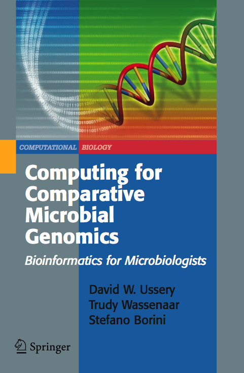 CMG textbook
David W. Ussery, Stefano Borini, and Trudy M. Wassenaar
"COMPUTING FOR COMPARATIVE GENOMICS: Bioinformatics for Microbiologists",
Springer (2008). Link to Amazon.com
Link to Comparative Microbial Genomics course
A decade of journal covers from the CBS Comparative Microbial Genomics group - 1999 to 2009.
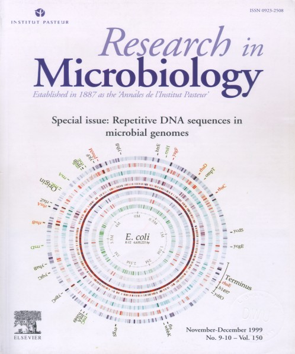 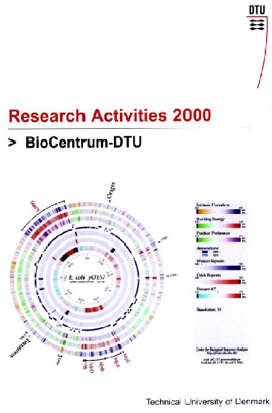
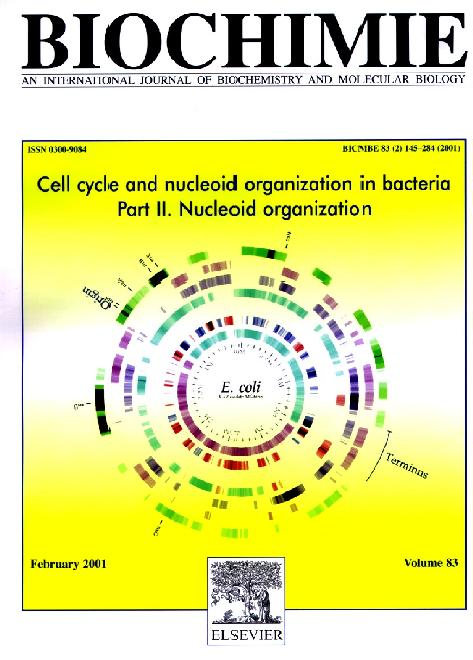
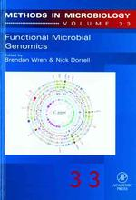
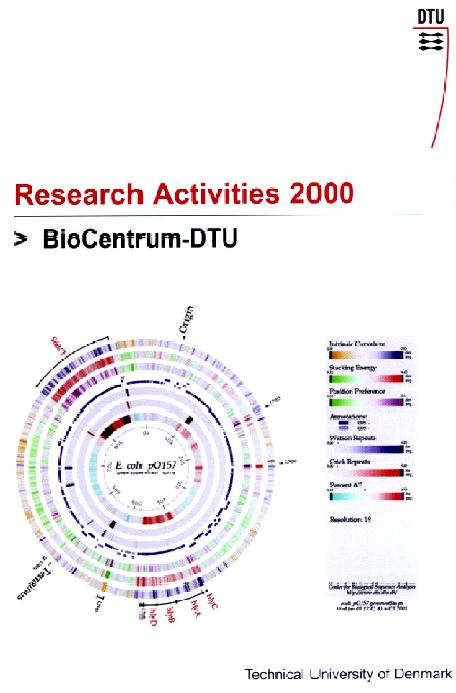
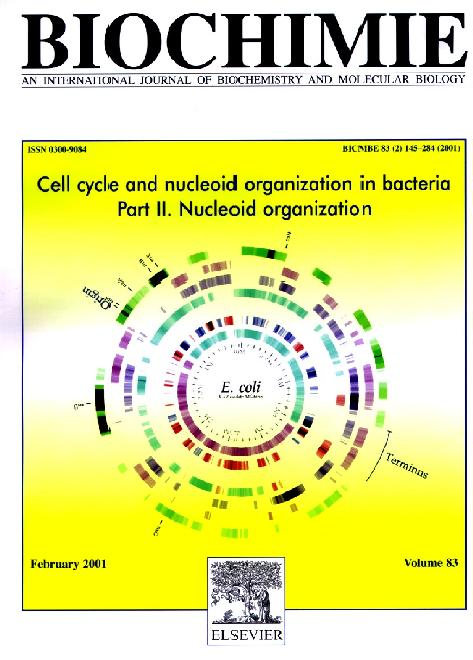
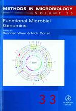
 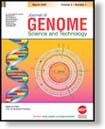
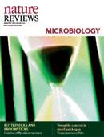
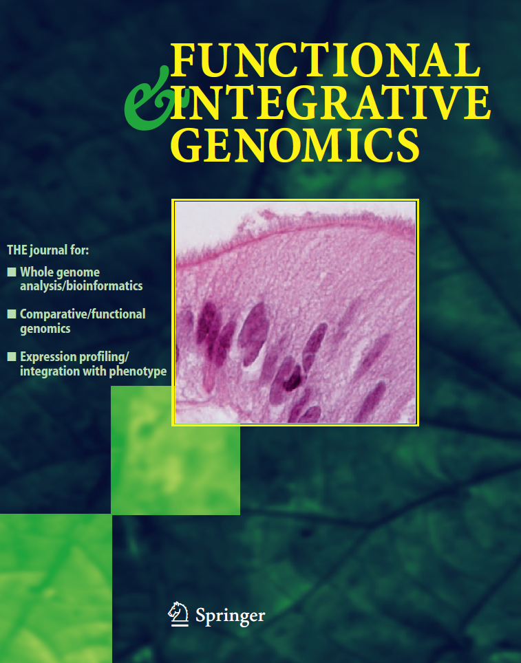
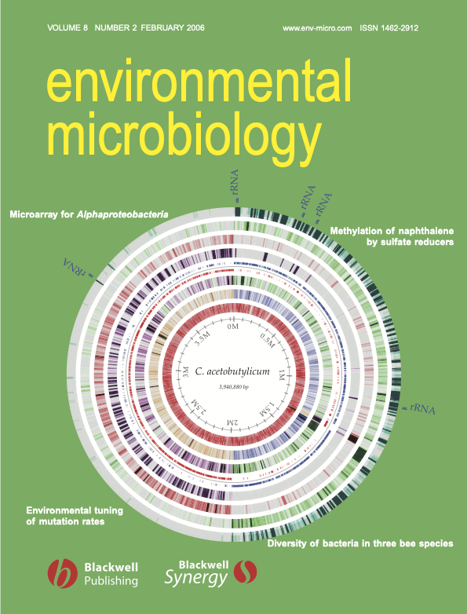
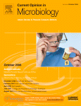
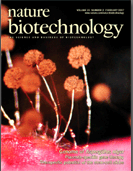
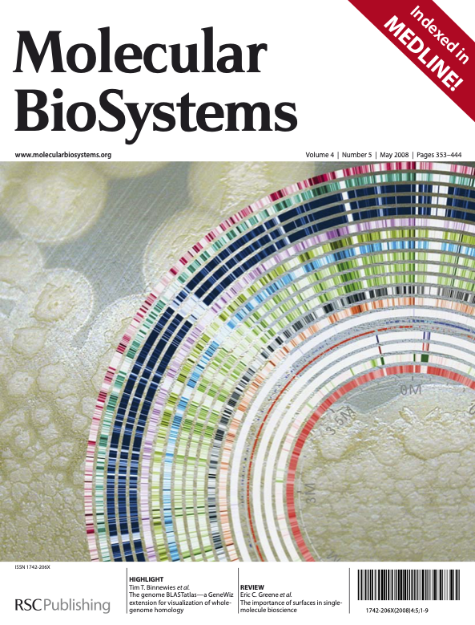
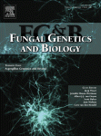
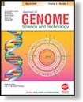
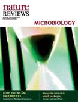
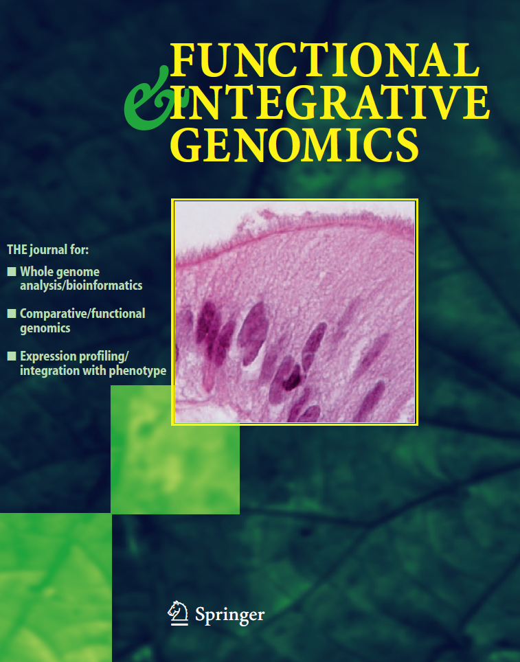
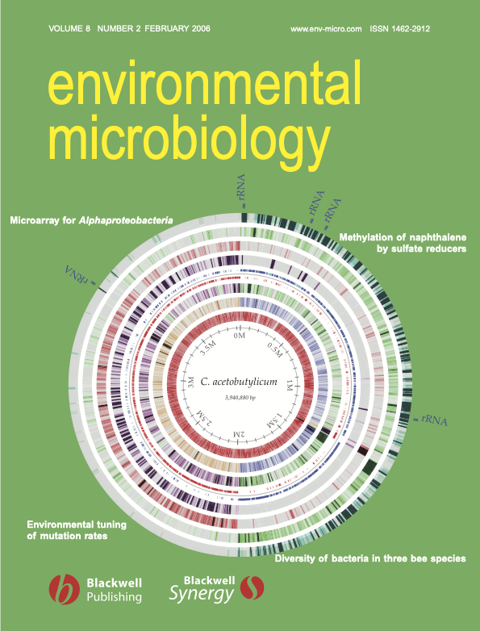
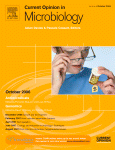
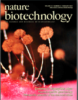
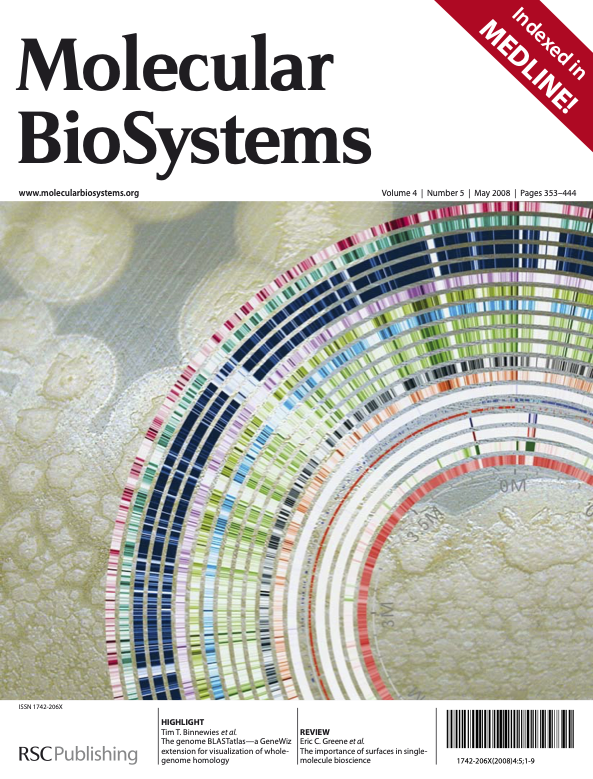
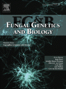
Publications from the Comparative Microbial Genomics Group at DTU (1997-2014).
2013
- Tammi Vesth, Karin Lagesen, Oncel Acar and David Ussery
"CMG-biotools, a free workbench for basic Comparative Microbial Genomics.",
PLoS ONE, 8 (4):e60120 (2013). doi: 10.1371/journal.pone.0060120 [PubMed] Link to PLoS ONE web page
- Pimlapas Leekitcharoenphon, Gregory S. Buzard, and David W. Ussery
"Comparative Genomics in the Genus Burkholderia.",
chapter in the book Burkholderia: Molecular Microbiology and Genomics (Horizon Press, 2013).
- Anne Holch, Kirsten Webb, Oksana Lukjancenko, Dave Wayne Ussery, Benjamin Rosenthal, and Lone Gram
"Genome sequencing identifies two nearly unchanged strains of persistent Listeria monocytogenes isolated in two different fish processing plants sampled six years apart.",
Applied and Environmental Microbiology, 79:2944-2951, (2013). doi: 10.1128/AEM. 03715-12. [PubMed] Link to AEM web page
- Carlos G. Acevedo-Rocha, Gang Fang, Markus Schmidt, David W. Ussery and Antoine Danchin
"From essential to persistent genes: A functional approach to construct synthetic life",
Trends in Genetics, 29:273-279, (2013). doi: 10.1016/j.tig.2012.11.001 [PubMed] Link to Trends in Genetics page
2012
- John J. Mekalanos, William Robins, David W. Ussery, Brigid M. Davis, Eric Schadt and Matthew K. Waldor
"Cholera in Haiti: Lack of evidence for a contribution of non-O1 Vibro cholera",
PNAS, in the press (October, 2012). [PubMed] Link to PNAS page
- Rolf S Kaas, Carsten Friis, David W Ussery and Frank M Aarestrup
"Estimating variation within the genes and inferring the phylogeny of 186 sequenced diverse Escherichia coli genomes",
BMC Genomics, 13:577 (2012). doi:10.1186/1471-2164-13-577 [PubMed] Link to BMC Genomics Journal page
- Lars-Gustav Snipen and David W Ussery
"A domain sequence approach to pangenomics: applications to Escherichia coli",
F1000 Research, 1:19 (2012). doi: 10.3410/f1000research.1-19.v1 Link to F1000 Research page -->
- Aitor Gonzaga, Ana-Belen Martin-Cuadrado, Mario L—pez-PŽrez, Carolina Megumi Mizuno, Inmaculada Garc’a-Heredia, Nikole E. Kimes, Purificaci—n Lopez-Garc’a, David Moreira, David Ussery, Mila Zaballos, Rohit Ghai and Francisco Rodriguez-Valera
"Polyclonality of Concurrent Natural Populations of Alteromonas macleodii",
Genome Biology and Evolution, 4:1360-1374 (2012). doi: 10.1093/gbe/evs112 Link to GBE page -->
- Francisco Rodriguez-Valera and David W Ussery
"Is the pan-genome also a pan-selectome?",
F1000 Research, 1:16 (2012). doi: 10.3410/f1000research.1-16.v1 Link to F1000 Research page -->
- Fathiah Zakham, Othmane Aouane, David Ussery, Abdelaziz Benjouad, and Moulay Mustapha Ennaji
"Computational genomics-proteomics and Phylogeny analysis of twenty one mycobacterial genomes (Tuberculosis & non Tuberculosis strains)",
Journal of Microbial Informatics and Experimintaion, in the press (August, 2012). [PubMed] Link to the Journal of Microbial Informatics and Experimintaion web page
- Amjad Ali, Siomar C. Soares, Anderson R. Santos, Luis C. Guimar‹es, Eudes Barbosa, Sintia S. Almeida, Vin’cius A.C. Abreu, Adriana R. Carneiro, Rommel T.J. Ramos, Syeda M. Bakhtiar, Syed S. Hassan, David W. Ussery, Stephen On, Artur Silva, Maria P. Schneider, Andrey P. Lage, Anderson Miyoshi, Vasco Azevedo
"Campylobacter fetus subspecies: Comparative genomics and prediction of potential virulence targets",
Gene, 508:145-156, (2012). [PubMed] Link to Gene web page
- Dan Børge Jensen, Tammi Camilla Vest, Peter Fisher Hallin, Anders Gorm Pedersen and David Ussery
"Bayesian prediction of bacterial optimum temperature based on genome sequences",
BMC Genomics, 13:8 S3 (August, 2012).
- Lars Snipen, Trudy Wassenaar, Eric Altermann, Jonathan Olson, Sophia Kathariou, Karin Lagesen, Monica Takamiya, Susanne Kn¿chel, David W Ussery and Richard J Meinersmann
"Analysis of Co-evolving Genes in Campylobacter jejuni and and C. coli",
Microbial Informatics and Experimentation, 2:8 (2012). [PubMed] Link to the Journal of Microbial Informatics and Experimintaion web page
- Shane C. Dillon, Elena Espinosa, Karsten Hokamp, David W. Ussery, Josep Casadesus, and Charles J. Dorman
"LeuO is a global regulator of gene expression in Salmonella enterica serovar Typhimurium",
Molecular Microbiology, in the press doi: 10.1111/j.1365-2958.2012.08162.x (July, 2012). [PubMed] Link to Molecular Microbiology page
- David W. Ussery and Stephen V. Gordon
"Two novel methods for using genome sequences to infer taxonomy",
Microbiology, 158:1414 (2012). [PubMed] Link to Microbiology page
- Carsten Kroeger, Shane C. Dillon, Andrew DS Cameron, Kai Papenfort, Sathesh K. Sivasankaran, Karsten Hokamp, Yanjie Chao, Alexandra Sittka, Magali Hebrard, Kristian Haendler, Aoife Colgan, Pimlapas Leekitcharoenphon, Gemma C Langridge, Amanda J Lohan, Brendan Loftus, Sacha Lucchini, David W. Ussery, Charles J Dorman, Nicholas R Thomson, Joerg Vogel, Jay CD Hinton
"Global transcriptional mapping, RNA polymerase distribution and the unique sRNA complement of the model pathogen Salmonella enterica serovar Typhimurium",
PNAS, 109:E1277-1286 (2012). [PubMed] Link to PNAS page
- Asli I. Ozen. Tammi Vesth, David W. Ussery
"From Genome Sequence to Taxonomy - A Skeptic's View",
book chapter for The Prokaryotes, 4th edition, (Springer) in the press (March, 2012).
- Pimlapas Leekitcharoenphon, Oksana Lukjancenko, Carsten Friis, Frank M Aarestrup and David W Ussery
"Genomic variation in Salmonella enterica core genes for epidemiological typing",
BMC Genomics, 13:88 doi:10.1186/1471-2164-13-88 (March, 2012). [PubMed] Link to BMC Genomics Journal page
- Oksana Lukjancenko, David W. Ussery and Trudy M. Wassenaar
"Comparative genomics of Bifidobacterium, Lactobacillus and related probiotic genera",
Microbial Ecology, 63:651-673, (2012). [PubMed] Link to Microbial Ecology Journal page
- Jon Bohlin, Mark WJ van Passel, Lars Snipen, Anja B Kristoffersen, David Ussery and Simon P Hardy
"Relative entropy differences in bacterial chromosomes, plasmids, phages and genomic islands",
BMC Genomics, 13::66, (2012). [PubMed] Link to BMC Genomics Journal page
- Asli I. Ozen and David W. Ussery
"Defining the Pseudomonas Genus: Where Do We Draw the Line with Azotobacter?",
Microbial Ecology, 63:239-248, (2012). [DOI: 10.1007/s00248-011-9914-8] [PubMed] Link to Microbial Ecology Journal page
- Mette V. Larsen, Salvatore Cosentino, Simon Rasmussen, Carsten Friis, Henrik Hasman, Rasmus Lykke Marvig, Lars Jelsbak, Thomas Sicheritz Pontén, David W. Ussery, Frank M. Aarestrup, Ole Lund
"Multilocus Sequence Typing of Total Genome Sequenced Bacteria",
J Clin Microbiol., 50:1355-1361 (2012). [PubMed] Link to J. Clinical Microbiology Journal page
2011
- Monica Takamiya, Asli Ozen, Morten Rasmussen, Thomas Alter, Tom Gilbert, Dave W. Ussery, and Susanne Knøchel
"Genome Sequences of Two Stress-Tolerant Campylobacter jejuni Poultry Strains, 305 and DFVF1099",
Journal of Bacteriology, 193:5546-5547, (2011). [PubMed]
- Dawn Field, Linda Amaral-Zettler, Guy Cochrane, James R. Cole, Peter Dawyndt, George M. Garrity, Jack Gilbert, Frank Oliver Gloeckner, Lynette Hirschman, Ilene Karsch-Mizrachi, Hans-Peter Klenk, Rob Knight, Renzo Kottmann, Nikos Kyrpides, Folker Meyer, Inigo San Gil, Susanna-Assunta Sansone, Lynn M. Schriml, Peter Sterk, Tatiana Tatusova, David W. Ussery, Owen White, John Wooley
"The Genomic Standards Consortium",
PLoS Biology, 9:(6) e1001088, (2011). [doi:10.1371/journal.pbio.1001088] [PubMed] Link to PLoS Biology Journal page
- David W. Ussery
"Natural Genetic Engineering: Intelligence & Design in Evolution?",
Microbial Informatics and Experimentation, 1:(11) , (2011). [doi:10.1186/2042-5783-1-11] Link to Microbial Informatics and Experimentation Journal page
- Annika Jacobsen, Rene S. Hendriksen, Frank M. Aaresturp, David W. Ussery and Carsten Friis
"The Salmonella enterica Pan-genome",
Microbial Ecology, in the press, (2011). [DOI: 10.1007/s00248-011-9880-1] [PubMed] Link to Microbial Ecology Journal page
- Monica Takamiya, Asli Ozen, Morten Rasmussen, Thomas Alter, Tom Gilbert, Dave W. Ussery, Susanne Knøchel
"Genome Sequence of the Campylobacter jejuni strain 327, a turkey strain isolated from a slaughterhouse",
Standards in Genomic Sciences, 4:113-122, (2011). [doi:10.4056/sigs.1313504] [PubMed] Link to SIGS Journal page
- David W. Ussery
"What is the minimal genome?",
Journal of Cosmology, 16:7013-7016, (2011). Link to Journal of Cosmology page
- F. Zakham, L. Belayachi, D. Ussery, M. Akrim, A. Benjouad, R. El Aouad, M.M. Ennaji
"Mycobacterial species as case-study of comparative genome analysis",
Cell Mol Biol (Noisy-le-grand), 57 Suppl:OL 1462-1469, (2011). [DOI 10.1170/167] [PubMed] PDF
- Dag Anders Brede, Lars Gustav Snipen, David Wayne Ussery, Alexander J. Nederbragt and Ingolf F. Nes
"Complete genome sequence of the commensal Enterococcus faecalis 62 isolated from a healthy Norwegian infant",
Journal of Bacteriology, 193:2377-2378, (2011).[DOI: doi:10.1128/JB.00183-11] [PubMed] Link to J. Bacteriology webpage
- Fredrik H. Karlsson, David W. Ussery, Jens Nielsen and Intawat Nookaew
"A Closer Look at Bacteroides: Phylogenetic Relationship and Genomic Implications of a Life in the Human Gut",
Microbial Ecology, 61:in the press, (2011).[DOI: 10.1007/s00248-010-9796-1] [PubMed] Link to Microbial Ecology webpage PDF
2010
- Matloob Qureshi, Eva Rotenberg, Hans-Henrik Stærfeldt, Lena Hansson, and David W. Ussery
"The Genome Atlas Resource",
In: Computational Systems Biology and Bioinformatics. International Conference on Computational Systems-Biology and Bioinformatics (CSBio 2010), Proceedings. CCIS , 115: 149-158, Springer, Heidelberg (2010). [DOI: 10.1007/978-3-642-16750-8_13] Link to Springer webpage PDF
- Oksana Lukjancenko and David W. Ussery
"Design of an Enterobacteriaceae Pan-genome Microarray Chip",
In: Computational Systems Biology and Bioinformatics. International Conference on Computational Systems-Biology and Bioinformatics (CSBio 2010), Proceedings. CCIS , 115: 174-189, Springer, Heidelberg (2010). [DOI: 10.1007/978-3-642-16750-8_15] Link to Springer webpage PDF
- Jon Bohlin, Lars Snipen, Axel Cloeckaert, Karin Lagesen, David Ussery, Anja B Kristoffersen and Jacques Godfroid
"Genomic comparisons of Brucella spp. and closely related bacteria using base compositional and proteome based methods",
BMC Evolutionary Biology, 10:249, (2010). Link to BMC Evolutionary Biology Journal page [PubMed]
- Carsten Friis, Trudy M. Wassenaar, Muhammad A. Javed, Lars Snipen, Karin Lagesen, Peter F. Hallin, Diane G. Newell, Monique Toszeghy, Anne Ridley, Georgina Manning and David W. Ussery
"Genomic Characterization of Campylobacter jejuni strain M1",
PLoS ONE, 5: e12253. (2010). [doi:10.1371/journal.pone.0012253] Link to PLoS ONE page [PubMed]
- Oksana Lukjancenko, Trudy M. Wassenaar, and David W. Ussery
"Comparison of 61 Sequenced Escherichia coli Genomes",
Microbial Ecology, 60:708-720, (2010). [DOI: 10.1007/s00248-010-9717-3] Link to Microbial Ecology Journal page [PubMed]
- Jon Bohlin, Lars Snipen, Simon P. Hardy, Anja B. Kristoffersen, Karin Lagesen, Torunn Donsvik, Eystein Skjerve, and David W. Ussery
"Analysis of intra-genomic GC content homogeneity within prokaryotes",
BMC Genomics, 11:464, (2010). doi:10.1186/1471-2164-11-464 Link to BMC Genomics page [PubMed]
- David W. Ussery
"One Small Step for Bacteria, or One Giant Leap for Mankind?",
Journal of Cosmology, 8:3, (2010). Link to Journal of Cosmology page
- Estelle Crozat, Cynthia Winkworth, Joel Gaffe, Peter F. Hallin, Margaret A. Riley, Richard E. Lenski, and Dominique Schneider
"Parallel Genetic and Phenotypic Evolution of DNA Superhelicity in Experimental Populations of Escherichia coli",
Mol. Biol. Evol., Advance Access published on April 14, 2010, doi:10.1093/molbev/msq099. [PubMed]
- Lars Snipen, and David W. Ussery
"Standard operating procedure for computing pangenome trees",
Standards in Genomic Sciences, 2:135-141, (2010). Link to SIGS Journal page
- Collin Davenport, Dave W. Ussery, Burkhard Tuemmler
"Comparative genomics of green sulfur bacteria",
Photosynth Res, in the press (2010). DOI 10.1007/s11120-009-9515-2 [PubMed] Link to Springer web page
- Karin Lagesen, Dave W. Ussery, Trudy M. Wassenaar
"The One Thousandth Genome - A Cautionary Tale",
Microbiology, in the press to be published March 2010. DOI 10.1099/mic.0.038257-0 [PubMed] Link to Microbiology web page
- Jose Luis Lavin, Tim T. Binnewies, Antonio G. Pisabarro, David W. Ussery, Juan M. Garcia-Lobo, Jose A. Oguiza
"Differences in two-component signal transduction proteins among the genus Brucella: implications for host preference and pathogenesis",
Veterinary Microbiology, in the press (2010).
- Jose Luis Lavin, Lucia Ramirez, David W. Ussery, Antonio G. Pisabarro, Jose A. Oguiza
"Genomic Analysis of Two-Component Signal Transduction Proteins in Basidiomycetes",
Journal of Molecular Microbiology and Biotechnology, 18:63-73 (2010).
- Tammi Vesth, Trudy M. Wassenaar, Peter F. Hallin, Lars Snipen, Karin Lagesen, and David W. Ussery
"On the Origins of Vibrio Species",
Microbial Ecology, 59:1-13 (2009). DOI 10.1007/s00248-009-9596-7 [PubMed] Link to Microbial Ecology web page PDF
2009
- Peter F. Hallin, Hans Henrik Staerfeldt, Eva Rotenberg, Tim T. Binnewies, Craig J. Benham, David Wayne Ussery
"GeneWiz browser: An Interactive Tool for Visualizing Sequenced Chromosomes",
Standards in Genomic Sciences, 1:204-215, (2009.) Link to SIGS Journal page PDF
- Cristiane C. Thompson, Ana Carolina. P. Vicente, Rangel C. Souza, Ana Tereza. R. Vasconcelos, Tammi Vesth, Nelson Alves Jr, David. W. Ussery, Tetsuya Iida, and Fabiano L. Thompson
"Genomic taxonomy of vibrios",
BMC Evolutionary Biology, 9:258 (2009). DOI 10.1186/1471-2148-9-258 [PubMed] Link to BMC Evolutionary Biology web page PDF
- Bohlin J, Skjerve E, Ussery DW.
"Analysis of genomic signatures in prokaryotes using multinomial regression and hierarchical clustering",
BMC Genomics, 10:487 (2009). DOI 10.1007/s00248-009-9596-7 [PubMed] Link to BMC Genomics web page PDF
- Lars Snipen, T. Almøy, David W. Ussery
"Microbial comparative pan-genomics using binomial mixture models",
BMC Genomics, 10:385, (2009). [PubMed]
- Jon Bohlin, Simon P. Hardy, David W. Ussery
"Stretches of alternating pyrimidine/purines and purines are respectively linked with pathogenicity and growth temperature in prokaryotes",
BMC Genomics, 10:346, (2009). [PubMed]
- George M. Garrity, Lorraine M. Thompson, David W. Ussery, Norman Paskin, Dwight Baker, Philippe Desmeth, D.E. Schindel and P.S. Ong
"Studies on Monitoring and Tracking Genetic Resources: An Executive Summary",
Standards in Genomic Sciences, 1:78-86, (2009.) Link to SIGS Journal page PDF
- Trudy M. Wassenaar, Jon Bohlin, Tim T. Binnewies, David W. Ussery
"Genome comparison of bacterial pathogens",
chapter 1 in Genome Dynamics, volume 6 - Microbial Pathogenomics, (Karger AG publishers, Basel, 2009). [PubMed] PDF
- David W. Ussery, Kristoffer Kiil, Karin Lagesen, Thomas Sicheritz-Ponten, Jon Bohlin, and Trudy M. Wassenaar
"The genus Burkholderia: analysis of 56 genomic sequences",
chapter 14 in Genome Dynamics, volume 6 - Microbial Pathogenomics, (Karger AG publishers, Basel, 2009). [PubMed] PDF
- Jennifer Russo Wortman, Jane Mabey Gilsenan, Vinita Joardar, Jennifer Deegan, John Clutterbuck, Mikael R. Andersen, David Archer, Mojca Bencina, Gerhard Braus, Pedro Coutinho, Hans von Doehren, John Doonan, Arnold J.M. Driessen, Pawel Durek, Eduardo Espeso, Erzsebet Fekete, Michel Flipphi, Carlos Garcia Estrada, Steven Geysens, Gustavo Goldman, Piet W.J. de Groot, Kim Hansen, Steven D. Harris, Thorsten Heinekamp, Kerstin Helmstaedt, Bernard Henrissat, Gerald Hofmann, Tim Homan, Tetsuya Horio, Hiroyuki Horiuchi, Steve James, Meriel Jones, Levente Karaffa, Zsolt Karanyi, Masashi Kato, Nancy Keller, Diane E. Kelly, Jan A.K.W. Kiel, Jung-Mi Kim, Ida J. van der Klei, Frans M. Klis, Andriy Kovalchuk, Nada Krasevec, Christian P. Kubicek, Bo Liu, Andrew MacCabe, Vera Meyer, Pete Mirabito, Morton Miskei, Magdalena Mos, Jonathan Mullins, David R. Nelson, Jens Nielsen, Berl R. Oakley, Stephen A. Osmani, Tiina Pakula, Andrzej Paszewski, Ian Paulsen, Sebastian Pilsyk, Istvan Pocsi, Peter J. Punt, Arthur F.J. Ram, Qinghu Ren, Xavier Robellet, Geoff Robson, Bernhard Seiboth, Piet van Solingen, Thomas Specht, Jibin Sun, Naimeh Taheri-Talesh, Norio Takeshita, Dave Ussery, Patricia A. vanKuyk, Hans Visser, Peter J.I. van de Vondervoort, Ronald P. de Vries, Jonathan Walton, Xin Xiang, Yi Xiong, An Ping Zeng, Bernd W. Brandt, Michael J. Cornell, Cees A.M.J.J. van den Hondel, Jacob Vissery, Stephen G. Oliver and Geoffrey Turner
"The 2008 update of the Aspergillus nidulans genome annotation: a community effort",
Fungal Genetics and Biology, 45:S2-S13, (2009.) [PubMed] PDF
- Kai Wang, David Wayne Ussery, Søren Brunak
"Analysis and prediction of gene splice sites in four Aspergillus genomes",
Fungal Genetics and Biology, 45:S14-S18, (2009). [PubMed] PDF
- Trudy M. Wassenaar, Tim T. Binnewies, Peter F. Hallin, and David W. Ussery
"Tools for comparison of bacterial genomes",
Microbiology of Hydrocarbons, Oils, Lipids, and Derived Compounds, (Springer-Verlag, Heidelberg, Germany, 2009). PDF
- G.M. Garrity, L.M. Thompson, D.W. Ussery, N. Paskin, D. Baker, P. Desmeth, D.E. Schindel and P.S. Ong
"Studies on Monitoring and Tracking Genetic Resources",
peer-reviewed technical report that was commissioned by the Convention on Biological Diversity (21 January, 2009)[UNEP/CBD/ABS/GTLE/2/INF/4] Link to pdf
2008
- David Wayne Ussery
"Physical Maps of Chromosomes",
Encyclopedia of Life Sciences, (John Wiley and Sons, Let., Chichester, UK, 2008)
- Alexandra Sittka, Sacha Lucchini, Kai Papenfort, Cynthia M. Sharma, Katarzyna Rolle, Tim T. Binnewies, Jay C. D. Hinton, Joerg Vogel
"Deep sequencing analysis of small noncoding RNA and mRNA targets of the global post-transcriptional regulator, Hfq",
PLoS Genetics, 4:e1000163, (2008) [PubMed] PLoS Genetics
- E Fidelma Boyd, Ana Luisa V Cohen, Lynn M Naughton, David W Ussery, Tim T Binnewies, O Colin Stine and Michelle A Parent
"Molecular analysis of the emergence of pandemic Vibrio parahaemolyticus ",
BMC Microbiology, 8:110, (2008) [PubMed] BMC Microbiology
- George M. Garrity, Dawn Field, Nikos Kyrpides, Lynette Hirschman, Susanna-Assunta Sansone, Samuel Angiuoli, James R. Cole, Frank Oliver Glöckner, Eugene Kolker, George Kowalchuk, Mary Ann Moran, Dave Ussery, and Owen White
"Toward a Standards-Compliant Genomic and Metagenomic Publication Record",
OMICS - A Journal of Integrative Biology, 12:157-160, (2008) [PubMed] PDF
- Kyung-Bum Lee, Philippe De Backer, Toshihiro Aono, Chi-Te Liu, Shino Suzuki, Tadahiro Suzuki, Takakazu Kaneko, Manabu Yamada, Satoshi Tabata, Doris M. Kupfer, Fares Z. Najar, Graham B. Wiley, Bruce Roe, Tim T. Binnewies, David W. Ussery , Wim D'Haeze, Jeroen Den Herder, Dirk Gevers, Danny Vereecke, Marcelle Holsters and Hiroshi Oyaizu
"The genome of the versatile nitrogen fixer Azorhizobium caulinodans ORS571",
BMC Genomics, 9:271 (2008). doi:10.1186/1471-2164-9-271 [PubMed] BMC Genomics link
- Dawn Field, George Garrity, Tanya Gray, Norman Morrison, Jeremy Selengut, Peter Sterk, Tatiana Tatusova, Nicholas Thomson, Michael J. Allen, Samuel V. Angiuolii, Michael Ashburner, Nelson Axelrod, Sandra Baldauf, Stuart Ballard Jeffrey Boore, Guy Cochrane, James Cole, Peter Dawyndt, Paul de Vos, Claude dePamphilis, Robert Edwards, Nadeem Faruque, Robert Feldman, Jack Gilbert, Paul Gilna, Frank Oliver Glöckner, Philip Goldstein, Robert Guralnick, Dan Haft, David Hancock, Henning Hermjakob, Christiane Hertz-Fowler, Phil Hugenholtz, Ian Joint, Leonid Kagan, Matthew Kane, Jessie Kennedy, George Kowalchuk, Renzo Kottmann, Eugene Kolker, Saul Kravitz, Nikos Kyrpides, Jim Leebens-Mack, Suzanna E Lewis, Kelvin Li, Allyson Lister, Phillip Lord, Natalia Maltsev, Victor Markowitz, Jennifer Martiny, Barbara Methe, Richard Moxon, Karen Nelson, Julian Parkhill, Lita Proctor, Susanna-Assunta Sansone, Andrew Spiers, Robert Stevens, Paul Swift, Chris Taylor, Yoshio Tateno, Adrian Tett, Sarah Turner, David Ussery, Bob Vaughan, Naomi Ward, Trish Whetzel, Gareth Wilson, and Anil Wipat
"Towards a richer description of our complete collection of genomes and metagenomes: the 'Minimum Information about a Genome Sequence' (MIGS) specification",
Nature Biotechnology, 26:541-547, (2008) [PubMed] PDF
- William G. Miller, Guilin Wang, Tim T. Binnewies, and Craig T. Parker
"The complete genome sequence and analysis of the human pathogen Campylobacter lari",
Foodborne Pathog Dis., 5:371-386, (2008) [PubMed] PDF
- Peter F. Hallin, Tim T. Binnewies and David W. Ussery
"The genome BLASTatlas-a GeneWiz extension for visualization of whole-genome homology",
Molecular BioSystems, 4:363-371 (2008). [PubMed] PDF
- Jon Bohlin, Eystein Skjerve and David W. Ussery
"Investigations of oligonucleotide usage variance within and between prokaryotes",
PLoS Computational Biology, 4:e1000057 (2008). doi:10.1371/journal.pcbi.1000057 [PubMed] PLoS Computational Biology link
- Kristoffer Kiil, Tim T. Binnewies, Hanni Willenbrock, Susse Kirkelund Hansen, Lei Yang, Lars Jelsbak, David W. Ussery, and Carsten Friis
"Comparative Genomics of Pseudomonas",
Chapter 1 in Pseudomonas: Model Organism, Pathogen, Cell Factory, (Edited by: B. H. A. Rehm, Wiley-VCH, 2008). Link to publisher Link to Amazon.com PDF of submitted version
- Viktoria Hancock, Aswin S. Seshasayee, David W. Ussery, Nicholas M. Luscombe,and Per Klemm
"Transcriptomics and adaptive genomics of the asymptomatic bacteria Escherichia coli strain 83972",
Mol Genet Genomics, 279:523-534, (2008). [PubMed] PDF
- Jon Bohlin, Eystein Skjerve and David W. Ussery
"Reliability and applications of statistical methods based on oligonucleotide frequencies in bacterial and archaeal genomes",
BMC Genomics, 49:104 (2008). doi:10.1371/journal.pcbi.1000057 [PubMed] BMC Genomics link
- Oleg N. Reva, Peter F. Hallin, Hanni Willenbrock, Thomas Sicheritz-Ponten, Burkhard Tuemmler and David W. Ussery
"Global features of the Alcanivorax borkumensis SK2 genome",
Mol Genet Genomics, 279:523-534, (2008). [PubMed] PDF
- Jens Klockgether, Dieco Würdemann, Lutz Wiehlmann, Tim T. Binnewies, David W. Ussery, and Burkhard Tümmler
"Genome Diversity of Pseudomonas aeruginosa",
Chapter 2 in Pseudomonas: Genomics and Molecular Biology, (Edited by: Pierre Cornelis, Caister Academic Press, 2008). Link to publisher Link to Amazon.com PDF file
2007
- Hanni Willenbrock, Peter Fisher Hallin, Trudy Wassanar, and David W. Ussery
"Characterization of probiotic Escherichia coli isolates using a novel pangenome microarray",
GenomeBiology, 8:R267. (2007) [PubMed] PDF
- William G. Miller, Craig T. Parker, Marc Rubenfield, George L. Mendz, Marc M. S. M. Wösten, David W. Ussery, John F. Stolz, Tim T. Binnewies, Peter F. Hallin, Guilin Wang, Joel A. Malek, Andrea Rogosin, Larry H. Stanker, and Robert E. Mandrell
"The Complete Genome Sequence and Analysis of the Epsilonproteobacterium Arcobacter butzleri",
PLoS ONE, 2:e1358 (2007). doi:10.1371/journal.pone.0001358 [PubMed] PLoS ONE link
- Oleg N Reva, Peter F. Hallin, Hanni Willenbrock, Thomas Sicheritz-Ponten, Burkhard Tümmler and David Ussery
"Global features of the Alcanivorax borkumensis SK2 genome",
Environmental Microbiology, in the press (Sept. 2007) PDF of submitted version
- Jose L Lavin, Kristoffer Kiil, Ohiana Resano, David W Ussery and Jose A Oguiza
"Comparative genomic analysis of two-component regulatory proteins in Pseudomonas syringae",
BMC Genomics, 8:397 (Sept. 2007) [PubMed] link to article [highly accessed]
- Tom Coenye, Pavel Drevinek, Eshwar Mahenthiralingam, Shiraz Ali Shah, Ryan T. Gill, Peter Vandamme, and David W. Ussery
"Identification of putative noncoding RNA genes in the Burkholderia cenocepacia J2315 genome",
FEMS Microbiol Lett 276:83-92,(2007). [PubMed] PDF file
- Mikko M Arvas , Teemu Kivioja, Alex Mitchell, Markku Saloheimo, David Ussery, Merja Penttila and Stephen Oliver
"Comparison of protein coding gene contents of the fungal phyla Pezizomycotina and Saccharomycotina",
BMC Genomics 3:325,(2007). [PubMed] BMC Genomics on-line version
- Karin Lagesen, Peter Hallin, Einar Andreas Rødland, Hans-Henrik Stærfeldt, Torbjørn Rognes and David W. Ussery
"RNAmmer: consistent and rapid annotation of ribosomal RNA genes",
Nucleic Acids Research 35:3100-3108,(2007). [PubMed] PDF file
- Trudy M. Wassenaar, Junaid Gamieldien, JoAnne Shatkin, Petra Luber, Nelson Moyer, Tom Carpenter, and David W. Ussery
"The importance of virulence prediction and gene networks in microbial risk assessment",
Human and Ecological Risk Assessment 13:1-15,(2007). PDF page proofs
- Hanni Willenbrock, and David W. Ussery
"Prediction of highly expressed genes in microbes based on chromatin accessibility",
BMC Mol Biol. 8(1):11, (2007). [PubMed] Link to BMC Molecular Biology file PDF file
- Herman J Pel, Johannes H de Winde, David B Archer, Paul S Dyer, Gerald Hofmann, Peter J Schaap, Geoffrey Turner, Ronald P de Vries, Richard Albang, Kaj Albermann, Mikael R Andersen, Jannick D Bendtsen, Jacques A E Benen, Marco van den Berg, Stefaan Breestraat, Mark X Caddick, Roland Contreras, Michael Cornell, Pedro M Coutinho, Etienne G J Danchin, Alfons J M Debets, Peter Dekker, Piet W M van Dijck, Alard van Dijk, Lubbert Dijkhuizen, Arnold J M Driessen, Christophe d'Enfert, Steven Geysens, Coenie Goosen, Gert S P Groot, Piet W J de Groot, Thomas Guillemette, Bernard Henrissat, Marga Herweijer, Johannes P T W van den Hombergh, Cees A M J J van den Hondel, Rene T J M van der Heijden, Rachel M van der Kaaij, Frans M Klis, Harrie J Kools, Christian P Kubicek, Patricia A van Kuyk, Jürgen Lauber, Xin Lu, Marc J E C van der Maarel, Rogier Meulenberg, Hildegard Menke, Martin A Mortimer, Jens Nielsen, Stephen G Oliver, Maurien Olsthoorn, Karoly Pal, Noel N M E van Peij, Arthur F J Ram, Ursula Rinas, Johannes A Roubos, Cees M J Sagt, Monika Schmoll, Jibin Sun, David Ussery, Janos Varga, Wouter Vervecken, Peter J J van de Vondervoort, Holger Wedler, Han A B Wösten, An-Ping Zeng, Albert J J van Ooyen, Jaap Visser and Hein Stam
"Genome sequencing and analysis of the versatile cell factory Aspergillus niger CBS 513.88",
Nature Biotechnology 25:221-231, (2007). [PubMed] PDF file
2006
- Hanni Willenbrock, Carsten Friis, Agnieszka S. Junker, and David W. Ussery
"An environmental signature for 323 microbial genomes based on codon adaptation indices",
GenomeBiology 7(12):R114, (2006). [PubMed] PDF file
- David W. Ussery
"Leaner and Meaner Genomes in Escherichia coli",
GenomeBiology 7:237 , (2006). [PubMed] PDF file
- Hanni Willenbrock, Anne Petersen, Camilla Sekse, Kristoffer Kiil, Yngvild Wasteson, and David W. Ussery
"Design of a 7 Genomes Escherichia coli Microarray for Comparative Genomic Profiling ",
Journal of Bacteriology 188:7713-7721, (2006). [PubMed] PDF file (page proofs)
- Tim Read and David W. Ussery
"Opening the pan-genomics box",
Current Opinion in Microbiology 9:496-498, (2006). [PubMed] PDF file
- F. Jerry Reen, Salvador Almagro-Moreno, David Ussery and E. Fidelma Boyd
"The genomic code: inferring Vibrionaceae niche specialization",
Nature Reviews Microbiology 4:697-704, (2006). [PubMed] PDF file
- Tim T. Binnewies, Yair Motro, Peter F. Hallin, Ole Lund, David Dunn, Tom La, David J. Hampson, Matthew Bellgard, Trudy M. Wassenaar, and David W. Ussery
"Ten years of bacterial genome sequencing: comparative-genomics-based discoveries",
Functional and Integrative Genomics 6:165-185, (2006). [PubMed] PDF file
- F. Stanke, T. Becker, H. Cuppens, V. Kumar, J. J. Cassiman, S. Jansen, D. Radojkovic, B. Siebert, J. Yarden, D. W. Ussery, T. F. Wienker, and B. Tummler
"The TNFalpha receptor TNFRSF1A and genes encoding the amiloride-sensitive sodium channel ENaC as modulators in cystic fibrosis",
Human Genetics 119:331-343, (2004). [PubMed] PDF file
- Peder Worning, Lars Juhl Jensen, Peter F. Hallin, Hans-Henrik Stærfeldt, and David W. Ussery
"Origin of Replication in Circular Prokaryotic Chromosomes",
Environmental Microbiology, 8:353-361. [PubMed] PDF file Supplemental Information
- Phatthanaphong Wanchanthuek, Peter F. Hallin, Rodrigo Gouveia-Oliveira, and David W. Ussery
"Structural features of fungal genomes",
Topics in Current Genetics 15:47-77, (2006). P. Sunnerhagen and J. Piskur (eds.) Comparative genomics using fungi as a model.Springer Verlag, Heidelberg. PDF file
Microbiology "Genome Update" #20; March, 2006
- P. Christoph Champ, Tim T. Binnewies, Natasja Nielsen, Guy Zinman, Kristoffer Kiil, Heng Wu, Jon Bohlon, and David W. Ussery
"Genome update: purine strand bias in 280 bacterial genomes",
Microbiology 152:579-583, (2006). [PubMed] PDF file
2005
- David W. Ussery, Ulrik de Lichtenberg,. and Lars Juhl Jensen
"Systems Biology - in the broadest sense of the word",
Environmental Microbiology, 7:482-483 (2005). [PubMed] text file
- Jose Oguiza, Kristoffer Kiil and David W. Ussery
"Extracytoplasmic function sigma factors in Pseudomonas syringae",
Trends in Microbiology 13:565-568, (2005). [PubMed] PDF file
Genome Updates
Microbiology "Genome Update" #12 January, 2005
- Tim T. Binnewies, Peter F. Hallin, Hans-Henrik Stærfeldt, David W. Ussery
"Genome Update: Proteome Comparisons"
Microbiology, 151:1-3, 2005. [PubMed] PDF file
Microbiology "Genome Update" #13 February, 2005
- Hanni Willenbrock, Tim T. Binnewies, Peter F. Hallin and David W. Ussery
"Genome Update: 2D clustering of bacterial genomes"
Microbiology, 151:333-336, 2005. [PubMed] PDF file
Microbiology "Genome Update" #14 March, 2005
- Peter F. Hallin, Natasja Nielsen, Kevin M. Devine, Tim T. Binnewies, Hanni Willenbrock and David W. Ussery
"Genome Update: Base Skews in 200+ Bacterial Chromosomes"
Microbiology, 151:633-637, 2005. [PubMed] PDF file
Microbiology "Genome Update" #15 April, 2005
- Tim T. Binnewies, Jannick D.Bendsten, Peter F. Hallin, Natasja Nielsen, Trudy M. Wassenaar, Martin B. Pedersen, Per Klemm and David W. Ussery
"Genome Update: Protein secretion systems in 225 bacterial genomes"
Microbiology, 151:1013-1016, 2005. [PubMed] PDF file
Microbiology "Genome Update" #16 June, 2005
- Jannick D.Bendsten, Tim T. Binnewies, Peter F. Hallin, Thomas Sicheritz-Ponten, and David W. Ussery
"Genome update: prediction of secreted proteins in 225 bacterial proteomes"
Microbiology, 151:1725-1727, 2005. [PubMed] PDF file
Microbiology "Genome Update" #17 July, 2005
- Jannick D.Bendsten, Tim T. Binnewies, Peter F. Hallin, and David W. Ussery
"Genome update: prediction of membrane proteins in prokaryotic genomes"
Microbiology, 151:2119-2121, 2005. [PubMed] PDF file
Microbiology "Genome Update" #18 October, 2005
- Kristoffer Kiil, Tim T. Binnewies, Thomas Sicheritz-Ponten, Hanni Willenbrock, Peter F. Hallin, Trudy M. Wassenaar, and David W. Ussery
"Genome Update: Sigma Factors in 240 Bacterial Genomes"
Microbiology, 151:3147-3150, 2005. [PubMed] PDF file
Microbiology "Genome Update" #19 November, 2005
- Kristoffer Kiil, Jean-Baptiste Fercaud, Christophe David, Tim T. Binnewies, Heng Wu, Thomas Sicheritz-Ponten, Hanni Willenbrock, and David W. Ussery
"Genome update: distribution of two-component transduction systems in 250 bacterial genomes"
Microbiology, 151:3447-3452, 2005. [PubMed] PDF file
2004
- Peter F. Hallin and David W. Ussery
"CBS Genome Atlas Database: A dynamic storage for bioinformatic results and sequence data",
Bioinformatics, 20:3682-3686, (2004). [PubMed] PDF file
- Hanni Wallenbrock and David W. Ussery
"Chromatin architecture and gene expression in Escherichia coli",
Genome Biology 5:252, (2004). [PubMed] PDF file Link to Genome Biology web site
- K. J. Hardy, D. W. Ussery, B. A. Oppenheim and P. M. Hawkey
"Distribution and characterization of staphylococcal interspersed repeat units (SIRUs) and potential use for strain differentiation" Microbiology 150:4045-4052, (2004). [PubMed] PDF file
- Nosek J, Novotna M, Hlavatovicova Z, Ussery DW, Fajkus J, Tomaska L.
"Complete DNA sequence of the linear mitochondrial genome of the pathogenic yeast Candida parapsilosis",
Mol Genet Genomics 272:173-180, (2004). [PubMed] PDF file
- Faye M. Barnard, Michael F. Loughlin, Hernan P. Fainberg, Michael P. Messenger, David W. Ussery, Paul Williams, and Peter J. Jenks
"Global regulation of virulence and the stress response by CsrA in the highly adapted human gastric pathogen Helicobacter pylori",
Molecular Microbiology 51:15-32, (2004). [PubMed] PDF file
- David W. Ussery, Jakob Bondo, Jimmy Hoffmann Hansen, Paiman Khorsand-Jamal, Anne Egholm Pedersen, Maria Seier Petersen, Pernille Nielsen, Peter Hallin
Clostridium atlas web pages
"A DNA-centric view of Clostridium genomes", In: Diagnosis, epidemiology and antibiotic resistance of the genus Clostridium, (Duchesnes C., Mainil J, Pelkonen S. and Menozzi MG, editors), Proceedings of the meeting, Presses de la Faculté de Médecine Vétérinaire de l'Université de Liège, pages 60-66, 2004. PDF file
- Lars Juhl Jensen, Marie Skovgaard, Thomas Sicheritz-Ponten, Niclas Tu Hansen, Helle Johansson, Merete Kjær Jørgensen, Kristoffer Kiil, Peter F. Hallin and David Ussery
"Comparative genomics of four Pseudomonas species"
Chapter 5 in THE PSEUDOMONADS VOL I. GENOMICS, LIFE STYLE AND MOLECULAR ARCHITECTURE (Juan L. Ramos, editor), Kluwer Academic / Plenum Publishers, New York, pages 139-164. PDF file
- Mensur Dlakic, David Ussery, and Søren Brunak
"DNA bendability and nucleosome positioning in transcriptional regulation"
Chapter 14 in DNA Conformation in Transcription, (Takashi Ohyama, editor) Landes Bioscience, Georgetown, Texas, 2005. PDF file
Genome Updates
Microbiology "Genome Update" #1 Feb. 2004
- David W. Ussery
"Genome Update: 161 prokaryotic genomes sequenced, and counting"
Microbiology, 150:261-263, (2004). [PubMed] PDF file
Microbiology "Genome Update" #2 March 2004
- David W. Ussery and Peter F. Hallin
"Genome Update: Length Distributions of Sequenced Prokaryotic Genomes"
Microbiology, 150:513-516, (2004). [PubMed] PDF file
Microbiology "Genome Update" #3 April 2004
- David W. Ussery and Peter F. Hallin
"Genome Update: AT Content in Sequenced Prokaryotic Genomes"
Microbiology, 150:729-752, (2004). [PubMed] PDF file
Microbiology "Genome Update" #4 May 2004
- David W. Ussery, Peter F. Hallin, Karin Lagesen and Tom Coenye
"Genome Update: rRNAs in Sequenced Microbial Genomes"
Microbiology, 150:1113-1115, (2004). [PubMed] PDF file
Microbiology "Genome Update" #5 June 2004
- David W. Ussery, Peter F. Hallin, Karin Lagesen,and Trudy M. Wassenaar
"Genome Update: tRNAs in Sequenced Microbial Genomes"
Microbiology, 150:1603-1606, (2004). [PubMed] PDF file
Microbiology "Genome Update" #6 July 2004
- David W. Ussery and Peter F. Hallin
"Genome Update: Annotation Quality in Sequenced Microbial Genomes"
Microbiology, 150:2015-2017, (2004). [PubMed] PDF file
Microbiology "Genome Update" #7 August 2004
- David W. Ussery, Mette S. Jensen, Tine R. Poulsen, and Peter F. Hallin
"Genome Update: Alignment of Bacterial Chromosomes"
Microbiology, 150:2491-2493, (2004). [PubMed] PDF file
Microbiology "Genome Update" #8 September, 2004
- David W. Ussery, Nikolaj Tindbaek, and Peter F. Hallin
"Genome Update: Promoter Profiles"
Microbiology, 150:2791-2793, (2004). [PubMed] PDF file
Microbiology "Genome Update" #9 October, 2004
- Peter F. Hallin, Timothy T. Binnewies, and David W. Ussery
"Genome Update: Chromosome Atlases"
Microbiology, 150:3091-3093, (2004). [PubMed] PDF file
Microbiology "Genome Update" #10 November, 2004
- David W. Ussery, Timothy T. Binnewies, Rodrigo Gouveia-Oliveira, Hanne Jarmer and Peter F. Hallin
"Genome Update: DNA Repeats in Bacterial Genomes"
Microbiology, 150:3519-3521, (2004). [PubMed] PDF file
Microbiology "Genome Update" #11 December, 2004
- Peter F. Hallin, Tom Coenye, Tim T. Binnewies, Hanne Jarmer, Hans-Henrik Stærfeldt and David W. Ussery
"Genome Update: Correlation of Bacterial Genomic Properties"
Microbiology, 150:3899-3903, (2004). [PubMed] PDF file
2003
- Ildefonso Cases, David W. Ussery, and Victor de Lorenzo
"The sigma-54 regulon (sigmulon) of Pseudomonas putida"
Environmental Microbiology, 5:1281-1293, (2003). [PubMed] PDF file
- Lars Mølbak, David W. Ussery, Dawn Field, Sarah Turner, Adrian Tett and Mark Bailey
"The Plasmid Genome Database"
Microbiology, 149:3043-3045, (2003). [PubMed] PDF file
- Lars Juhl Jensen, David W. Ussery, and Søren Brunak
"Functionality of System Components: Conservation of Protein Function in Protein Feature Space"
Genome Research, 13:2444-2449, (2003). [PubMed] PDF file
- Zheng-Chao Tu, David W. Ussery, David T. Pride, and Martin J. Blaser
"Genomic Characteristics of the Campylobacter fetus sap island"
Genome Letters, 2:34-40, (2003).
- Vera van Noort, Peder Worning, David W. Ussery, William Rosche, and Richard R. Sinden
"Strand misalignments lead to quasipalindrome correction"
Trends in Genetics, 19:365-369, (2003). [PubMed] PDF file Reproduced with permission from Trends in Genetics.
- R.B. Langkjær, S. Casaregola, David W. Ussery, C. Gaillardin, and J. Piškur
"Sequence analysis of three mitochondrial DNA molecules reveals interesting differences among Saccharomyces yeasts"
Nucleic Acids Research, 31:3081-3091, (2003). [PubMed] PDF file
- Lars Juhl Jensen, Marie Skovgaard, Thomas Sicheritz-Pontén, Merete Kjær Jørgensen, Christiane Lundegaard, Corinna Cavan Pedersen, Nanna Petersen, and David W. Ussery,
"Analysis of two large functionally uncharacterized regions in the Methanopyrus kandleri AV19 genome"
BMC Genomics, 4:2, (2003). [PubMed] PDF file
- Lise Petersen, Thomas S. Larsen, David W. Ussery, Stephen L.W. On, and Anders Krogh
"RpoD promoters in Campylobacter jejuni exhibit a strong periodic signal instead of a -35 box"
J. Molecular Biology, 326:1361-1372, (2003). [PubMed] PDF file
2002
- Marios Phylactides, Rebecca Rowntree, Hugh Nuthall, David Ussery, Ann Wheeler, and Ann Harris
"Evaluation of potential regulatory elements identified as DNase I hypersensitive sites in the CFTR gene",
European Journal of Biochemistry, 269: 553-559, (2002). PDF file
- Valerie Wood, R. Gwilliam, M.A. Rajandream, M. Lyne, R. Lyne, A. Stewart, J. Sgouros, N. Peat, J. Hayles, S. Baker, D. Basham, S. Bowman, K. Brooks, D. Brown, S. Brown, T. Chillingworth, C. Churcher, M. Collins, R. Connor, A. Cronin, P. Davis, T. Feltwell, A. Fraser, S. Gentles, A. Goble, N. Hamlin, D. Harris, J. Hidalgo, G. Hodgson, S. Holroyd, T. Hornsby, S. Howarth, E.J. Huckle, S. Hunt, K. Jagels, K. James, L. Jones, M. Jones, S. Leather, S. McDonald, J. McLean, P. Mooney, S. Moule, K. Mungall, L. Murphy, D. Niblett, C. Odell, K. Oliver, S. O'Neil, D. Pearson, M.A. Quail, E. Rabbinowitsch, K. Rutherford, S. Rutter, D. Saunders, K. Seeger, S. Sharp, J. Skelton, M. Simmonds, R. Squares, S. Squares, K. Stevens, K. Taylor, R.G. Taylor, A. Tivey, S. Walsh, T. Warren, S. Whitehead, J. Woodward, G. Volckaert, R. Aert, J. Robben, B. Grymonprez, I. Weltjens, E. Vanstreels, M. Rieger, M. Schafer, S. Muller-Auer, C. Gabel, M. Fuchs, C. Fritzc, E. Holzer, D. Moestl, H. Hilbert, K. Borzym, I. Langer, A. Beck, H. Lehrach, R. Reinhardt, T.M. Pohl, P. Eger, W. Zimmermann, H. Wedler, R. Wambutt, B. Purnelle, A. Goffeau, E. Cadieu, S. Dreano, S. Gloux, V. Lelaure, S. Mottier, F. Galibert, S.J. Aves, Z. Xiang, C. Hunt, K. Moore, S.M. Hurst, M. Lucas, M. Rochet, C. Gaillardin, V.A. Tallada, A. Garzon, G. Thode, R.R. Daga, L. Cruzado, J. Jimenez, M. Sanchez, F. del Rey, J. Benito, Z. Dominguez, J.L. Revuelta, S. Moreno, J. Armstrong, S.L. Forsburg, L. Cerrutti, T. Lowe, W.R. McCombie, I. Paulsen, J. Potashkin, G.V. Shpakovski, D. Ussery, B.G. Barrell, P. Nurse,
"The genome sequence of Schizosaccharomyces pombe",
Nature, 415: 871-880, (2002). Nature Genome Gateway web site Link to GenomeAtlas pages for S. pombe
- Lise Petersen, Stephen L.W. On, and David Ussery
"Visualisation and Significance of DNA Structural Motifs in the Campylobacter jejuni genome",
Genome Letters, 1:16-25, (2002).
Link to web page containing supplemental information.
PDF file
- Randi F. Petersen, Rikke B. Langær, Jeanne Hvidtfeldt, Judita Gartner, Judita Gartner, William Palmen, David W. Ussery, and Jure Piskur
"Transmission rules and orginization of the mitochondrial genome differ among Saccharomyces yeasts", J. Mol. Biol., 318:627-636, (2002).
PDF file
- David Ussery, Dikeos Mario Soumpasis, Søren Brunak, Hans-Henrik Stærfeldt, Peder Worning, and Anders Krogh
"Bias of Purine Stretches in Sequenced Genomes",
Computers in Chemistry, 26, 531-541, (2002).
PDF file
Link to web page comparing fractions purine and pyr/pur tracts in more than 700 chromosomes
- Marie Skovgaard, Lars Juhl Jensen, Carsten Friis Carsten Friis Hans-Henrik Stærfeldt, Peder Worning, Søren Brunak,andDavid Ussery
"The Atlas Visualisation of Genome-wide Information",
Methods in Microbiology, 33,49-63, (2002). PDF file
- Mark A. Schembri, David Ussery, Chris Workman, Henrik Hasman, and Per Klemm
"DNA Microarray analysis of fim mutations in Escherichia coli",
Molecular Genetics and Genomics, 267:721-729 (2002). PDF file
- Vic Norris, Derek Raine, Yves Bouligand, Milton Saier, Josette Yaniv, Itshak Fishov, Jeremy Ramsden, Jean-Marc Valleton, David Ussery, Bernard Gleyse, Catharine Lange, Nicole Orange, Corinne Loutellier, Paul Soller, Helene Pollard, Paul Bourgine and Francois Kepes
"Hyperstructures, Genome Analysis and I-Cells"
Acta Biotheoretica, 50:357-373, (2002). [PubMed]
- Christian Weinel, David W. Ussery, Haakan Ohlson, Thomas Sicheritz-Ponten, Claudia Kiewitz, and Burkhard Tümmler
"Comparative Genomics of Pseudomonas aeruginosa PAO1 and Pseudomonas putida KT2440: Orthologs, Codon Usage, REP Elements, and Oligonucleotide Motif Signatures"
Genome Letters. 19:365-369, (2002). PDF file
- David W. Ussery,
"DNA Structure: A-, B-, and Z-DNA Families", The Encyclopedia of Life Sciences, (Macmillan Publishers, London, 2002). PDF file
2001
- David W. Ussery, Thomas S. Larsen, K. Trevor Wilkes, Carsten Friis, Peder Worning, Anders Krogh, and Søren Brunak,
"Genome Organisation and Chromatin Structure in Escherichia coli",
Biochimie, 83:201-212, (2001).
[PubMed] PDF file [cover]
[cover]
Link to web page with supplemental information about this article.
- Marie Skovgaard, Lars Juhl Jensen, Søren Brunak, David W. Ussery, and Anders Krogh
"On the Total Number of Genes and Their Length Distribution in Complete Microbial Genomes",
Trends in Genetics, 17:425-428, 2001.
PDF file
Link to web page with supplemental information about this article.
- David W. Ussery,
"Genome Databases",
The Encyclopedia of Genetics, (Academic Press, New York, 2001), pages 517-521. PDF file
Table with links to Genome Databases
- David W. Ussery,
"DNA Denaturation",
The Encyclopedia of Genetics, (Academic Press, New York, 2001), pages 550-553. PDF file
2000
- Peder Worning, Lars Juhl Jensen, Karen E. Nelson, Søren Brunak, and David W. Ussery,
"Structural analysis of DNA sequence: Evidence for lateral gene transfer in Thermotoga maritima ",
Nucleic Acids Research, 28 (#3), 706-709, (2000).
[PubMed] Nucleic Acids Research PDF file Reproduced with permission from NAR Online http://www.oup.co.uk/nar
Link to the DNA Periodicity Analysis in Genomes main table.
- Anders Gorm Pedersen, Lars Juhl Jensen, Hans-Henrik Stærfeldt, Søren Brunak, and David W. Ussery,
"A DNA Structural Atlas for Escherichia coli",
Journal of Molecular Biology, 299 (#4), 907-930, (2000).
[PubMed] PDF file[Cover]
[Description of cover figure]
Link to Escherichia coli Atlases table
- Carsten Friis, Lars Juhl Jensen, and David W. Ussery,
"Visualisation of Pathogenicity Regions in Bacteria",
Genetica, 108:47-51, (2000).
[PubMed] PDF file [cover]
Link to Yersinia pestis pPCP1 atlases.
Link to S. typhimurium DT104 atlases.
Link to E. coli pO157 atlases.
1999
- David W. Ussery, Chris F. Higgins, and Alex Bloshoy,
"Environmental Influences on DNA Curvature",
J. Biomolecular Structure & Dynamics,16:811-823, (1999).
[PubMed]
- Lars Juhl Jensen, Carsten Friis, and David W. Ussery,
"Three Views of Microbial Genomes",
Research in Microbiology, 150, pages 773-777, (1999).
[PubMed] PDF file[Cover]
Link to the Mycoplasma genitalium atlas page.
1998
- Richard R. Sinden, Christopher E. Pearson, Vladmir N. Potaman, and David W. Ussery,
"DNA: Structure and Function",
Advances in Genome Biology,5A:1-141, (1998).
Other articles - Book Reviews and misc.
- Ussery,D.W.
"A Biochemist's Response to 'The Biochemical Challenge to Evolution'"
Bios, 70:40-45, (1999).
A web version of this can be found at: http://www.cbs.dtu.dk/staff/dave/Behe1.html
- David W. Ussery,
"Bioinformatics2000 Meeting Report",
GenomeBiology, 1:(#3), pages 1-2, (2000).
PDF file On-Line Version at http://www.genomebiology.com/2000/1/3/reports/4014/
- Richard Thornhill, and David W. Ussery,
"A Classification of Possible Routes in Darwinian Evolution",
J. Theor. Biol., 202, 111-116, (2000).
[PubMed] PDF file
- Ussery,D.W.
"The Stealth Creationists"
Skeptic, 8 (#4):72-74, (2001).
A web version of this can be found at: http://www.cbs.dtu.dk/staff/dave/IconsReview.html
- Ussery,D.W.
"Darwin's Transparent Box: The Biochemical Evidence for Evolution", Chapter 4 in "Why Intelligent Design Fails - A Critique of the New Creationism", Matt Young and Taner Edis, editors, (Rutgers University Press, New Brunswick, New Jersey, 2004).
Publications before 1998
- Jordi B.J., Fielder A.E., Burns C.M., Hinton J.C., Dover N., Ussery D.W., Higgins C.F.,
"DNA binding is not sufficient for H-NS-mediated repression of proU expression",
The Journal of Biological Chemistry,272:12083-12090, (1997).
- Potaman, V.N., Ussery, D.W., Sinden, R.R.,
"Formation of a Combined H-DNA/Open TATA Box Structure in the Promoter Sequence of the Human Na,K-ATPase a2 Gene",
The Journal of Biological Chemistry,271:13441-13447, (1996).
- Ussery, D.W., Hinton, J.C.D., Jordi, B.J.A.M., Granum, P.E., Seirarafi, A., Stephen, R.J., Tupper, A.E., Beridge, G., Sidebotham ,J.M., Higgins, C.F.,
"The chromatin-associated protein H-NS",
Biochimie,76:968-980, (1994).
- Tupper, A.E., Owen-Hughes, T.A., Ussery, D.W., Santos, D.S., Ferguson, D.J.P., Sidebotham,J.M., Hinton,J.C.D., Higgins,C.F.,
The chromatin-associated protein H-NS alters DNA topology in vitro",
The EMBO Journal,13:258-268, (1994).
- Ussery, D.W., Sinden, R.R.,
"Environmental Influences on the In Vivo Level of Intramolecular Triplex DNA in Escherichia coli",
Biochemistry,32:6206-6213, (1993).
- Sinden, R.R., Ussery, D.W.,
"Analysis of DNA Structure In Vivo Using Psoralen Photobinding: Measurement of Supercoiling, Topological Domains, and DNA-Protein Interactions",
Methods in Enzymology,212:319-335 (1992).
- Ussery,D.W., Hoepfner,R.W., Sinden,R.R.,
"Probing DNA Structure with Psoralen In Vitro",
Methods in Enzymology,212:242-262 (1992).
- Zheng,G., Ussery,D.W., Sinden,R.R.,
"Estimation of Superhelical Density In vivo from Analysis of the Level of Cruciforms Existing in Living Cells",
The Journal of Molecular Biology,221:122-129 (1991).
- Katz,J.E., Wells,S., Ussery,D., Bustamante,C.J., Maestre, M.F.
"Design and Construction of a Circular Intensity Differential Scattering Instrument",
Review of Scientific Instruments,55:1574-1579, (1984).
- Jing Jin, Yasir Rahmatallah, Horacio Gomez-Acevedo, Yong-Moon Mark Park, David W. Ussery, Mohammed S. Orloff
- David W. Ussery, Anders Gorm Pedersen, Hans Henrik Stærfeldt and Søren Brunak, "A DNA Structural Atlas of Escherichia coli" Poster for 25th Silver Jubilee FEBS Meeting, in Copenhagen, Denmark, (July 5-10, 1998).
- David W. Ussery, "Gene Finding in 3D", talk at 2nd Annual TIGR conference on "Comparative Microbial Genomics", in Reston, Virginia, U.S.A.(Oct. 31 to Nov. 3, 1998).
- David W. Ussery, Anders Gorm Pedersen, Alex Bolshoy, Hans Henrik Stærfeldt and Søren Brunak, "A DNA structural atlas of promoters in microbial genomes" Poster for the 2nd Annual TIGR conference on "Comparative Microbial Genomics", in Reston, Virginia, U.S.A.(Oct. 31 to Nov. 3, 1998).
- David W. Ussery, "Identification of Bacterial Promoter Sequences", invited talk at Microbial Genomes III:
Sequencing, Functional Characterization and Comparative Genomics", in Chantilly, Virginia, U.S.A. on 1 Feb., 1999.
- Lars Juhl Jensen, Anders Gorm Pedersen, Hans Henrik Stærfeldt, Søren Brunak and David W. Ussery, "A DNA structural atlas of promoters in microbial genomes", Poster at Microbial Genomes III: Sequencing, Functional Characterization and Comparative Genomics, in Chantilly, Virginia, U.S.A., Jan. 29 - 1 Feb., 1999
- David W. Ussery, Anders Gorm Pedersen, Lars Juhl Jensen, Hans Henrik Stærfeldt, and Peder Worning,
"A DNA Structural Atlas for E. coli", Poster at Bioinformatics '99 meeting in Lund, Sweden, 15-18 April, 1999.
- David W. Ussery, "Prediction of Gene Expression in E. coli", invited talk at the Department of Pharmacology, Microbiology and Food Hygiene The Norwegian School of Veterinary Science, Oslo, NORWAY, 16 September, 1999.
- Peder Worning, Lars Juhl Jensen, Karen E. Nelson, Søren Brunak, and David W. Ussery, "Structural analysis of DNA sequence: Evidence for lateral gene transfer in Thermotoga maritima ", poster for the annual meeting of the Danish Society for Biochemistry and Molecular Biology, 3-5 October, 1999.
- David W. Ussery, "A DNA Structural Atlas for E. coli", invited talk at the Department of Molecular Biology, Odense University, Denmark, 29 October, 1999.
- Peder Worning, Lars Juhl Jensen, Karen E. Nelson, Søren Brunak, and David W. Ussery, "Structural analysis of DNA sequence: Evidence for lateral gene transfer in Thermotoga maritima ", poster for the 7th Annual Conference on Small Genomes, 13-17 November, 1999, at The Doubletree Hotel, Arlington, Virginia, Sponsored by the U. S. Department of Energy, The Office of Naval Research, and the National Science Foundation.
- Carsten Friis, Lars Juhl Jensen, and David W. Ussery, "Three Views of Microbial Genomes", poster for the 7th Annual Conference on Small Genomes, 13-17 November, 1999, at The Doubletree Hotel, Arlington, Virginia, Sponsored by the U. S. Department of Energy, The Office of Naval Research, and the National Science Foundation.
- Peder Worning, Lars Juhl Jensen, Karen E. Nelson, Søren Brunak, and David W. Ussery, "Structural analysis of DNA sequence: Evidence for lateral gene transfer in Thermotoga maritima ", electronic poster for the Third Annual Conference On Computational Genomics, 18-21 November, 1999, at the Renaissance Harborplace Hotel Baltimore, MD.
- David W. Ussery, Anders Gorm Pedersen, Lars Juhl Jensen, Carsten Friis, Hans Henrik Stærfeldt, and Søren Brunak"A DNA Structural Atlas for E. coli", electronic poster for theThird Annual Conference On Computational Genomics, 18-21 November, 1999, at the Renaissance Harborplace Hotel Baltimore, MD.
- David W. Ussery, "A DNA Structural Atlas for E. coli", invited talk at the E.coli Genetics group, University of Wisconsin, Madison, Wisconsin, USA, 23 November, 1999.
- David W. Ussery, "DNA structural periodicities in complete genomes: Evolutionary Genomic Signatures", invited talk at the Dept. of Evolutionary Biology, Copenhagen University, Denmark, 10 December, 1999.
- Peder Worning, "Presentation and discussion of perspectives of biosequence analysis in biology research.", invited talk as part of the Dina Research School Workshop on Biosekvensanalyse, Koldbaekgaard Landboskole, Skejby, Denmark, 7 April 2000
- R.F. Petersen, J. Hvidtfeldt, R.B. Langkjaer, C. Groth, W. Palmen, D. Ussery, and J. Piskur, "Structure and Genetic Stability of the Saccharomyces castelli Mitochondrial Genome", Poster for the Genomes 2000: International Conference on Microbial and Model Genomes, 11-15 April, 2000, Paris, France.
- Peder Worning, Lars Juhl Jensen, Karen E. Nelson, Søren Brunak, and David W. Ussery, "Structural analysis of DNA sequence: Evidence for lateral gene transfer in Thermotoga maritima ", poster for Bioinformatics 2000 conference, 27-30 April, 2000, at the Hotel Marienlyst in Elsinore, Denmark.
- Carsten Friis, Lars J. Jensen, and David W. Ussery"Localisation of DNA Repeats in complete chromosomes", poster for Bioinformatics 2000 conference, 27-30 April, 2000, at the Hotel Marienlyst in Elsinore, Denmark.
- David W. Ussery, Lars Juhl Jensen, Richard R. Sinden, and Peder Worning"Analysis of DNA Repeats in Complete Genomes", poster for 18th International Congress of Biochemistry and Molecular Biology - "BEYOND THE GENOME: Understanding and Exploiting Molecules and Cells in the 3rd Millennium", 16-20 July, 2000, in Birmingham, England.
- Anders Gorm Pedersen, Lars Juhl Jensen, Carsten Friis, Hans Henrik Stærfeldt, Søren Brunak, and David W. Ussery"A DNA Structural Atlas for E. coli", poster for the8th International Conference on Intelligent Systems for Molecular Biology, 19-23 August, 2000, at the Price Center, UC San Diego, La Jolla, California, USA.
- David W. Ussery, "DNA Structures in Whole Genomes", invited talk at the EMBO Workshop on Cell Cycle and Nucleoid Organisation in Bacteria, 2-6 September, 2000, held on the Island of Texel, The Netherlands.
- Anders Gorm Pedersen, Lars Juhl Jensen, Hans Henrik Stærfeldt, Søren Brunak, and David W. Ussery, "DNA Structural Atlases for Complete Genomes", poster at the EMBO Workshop on Cell Cycle and Nucleoid Organisation in Bacteria, 2-6 September, 2000, held on the Island of Texel, The Netherlands.
- David W. Ussery, "12 Different Views of Escherichia coli p0157", invited talk at the Dept. of Microbiology, Danish Vetinary Laboratory, Copenhagen, Denmark, 11 September, 2000.
- David W. Ussery, "DNA Structural Atlases", Departmental Seminar at the Microbiology Dept., Danish Technical University, Kgs. Lyngby, Denmark, 14 September, 2000.
- David W. Ussery, "DNA Atlases for Chromosomes from All Five Kingdoms of Life", talk at the Joint Stockholm/Copenhagen Bioinformatics Meeting, Stockholm, Sweden, 24 September, 2000.
- David W. Ussery, "DNA Structural Atlases", invited talk at the Department of Microbiology, Danish Vetinary Laboratory, Copenhagen, Denmark, 5 October, 2000.
- David W. Ussery, "Bacterial Pathogenicity and DNA Structures", talk for the Department of Biotechnology's annual January meeting, Danish Technical University, Kgs. Lyngby, Denmark, 2 January, 2001.
- David W. Ussery, "Affymetrix DNA Chip analysis of the Escherichia coli Genome", informal talk for the Affymetrix User's group, Department of Biotechnology, Danish Technical University, Kgs. Lyngby, Denmark, 5 January, 2001.
- David W. Ussery, "Visualisation of Whole Genome Expression in Escherichia coli", Departmental Seminar at the Microelectronics Center (MIC), Danish Technical University, Kgs. Lyngby, Denmark, 19 January, 2001.
- David W. Ussery, "DNA Structural Atlases for Eukaryotic Chromosomes", invited plenary talk at the ASM & TIGR Conference on Microbial Genomes, Monterey, California, USA, 31 January, 2001.
- David W. Ussery, "Genome Organization and Chromatin Structure in Escherichia coli", talk at the Albert B. Alkek Institute of Biosciences and Technology, Texas A&M University System, Health Science Center, Houston, Texas, USA, 1 February, 2001.
- Carsten Friis, Peder Worning, Birgitte Regenberg, Chris Workman, Steen Knudsen, and David W. Ussery, "Measurement and Prediction of Gene Expression in Whole Genomes", poster for theBIOINFORMATICS 2001 Meeting, 29 March - 1 April, 2001, at the First Resort Billingehus Hotel and Conference Centre, Skövde, Sweden .
- Peder Worning, Lars Juhl Jensen, Hans Henrik Stærfeldt, and David W. Ussery, "Origin of Replication in Circular Bacterial Genomes and Plasmids", poster for the BIOINFORMATICS 2001 Meeting, 29 March - 1 April, 2001, at the First Resort Billingehus Hotel and Conference Centre, Skövde, Sweden .
- David W. Ussery, "DNA Chip Atlases for Analysis of Gene Expression", invited talk for the 4th Annual Affymetrix User's Group Meeting, 9-10 May, 2001, in Cannes, France.
- David Ussery, Heidi Dvinge, Herluf Riddersholm, Nikolaj Blom, Kristoffer Rapacki, and Søren Brunak, "Genome Size Distribution in Prokaryotes, Eukaryotes, and Viruses", poster for the 9th International Conference on Intelligent Systems for Molecular Biology, 21-25 July, 2001, at Tivoli Gardens, Copenhagen, Denmark.
- Lise Petersen, Stephen L.W. On, and David Ussery, "DNA atlases for the Campylobacter jejuni genome", poster for the 9th International Conference on Intelligent Systems for Molecular Biology, 21-25 July, 2001, at Tivoli Gardens, Copenhagen, Denmark.
- Christian B. Jendresen, Maiken H. Pedersen, Morten S. Thomsen, Torsten Kolind, and David Ussery, "DNA atlases for the Staphylococcus aureus genome", poster for the 9th International Conference on Intelligent Systems for Molecular Biology, 21-25 July, 2001, at Tivoli Gardens, Copenhagen, Denmark.
- Peder Worning, Lars Juhl Jensen, Hans Henrik Stærfeldt, and David W. Ussery, "Origin of Replication in Circular Bacterial Genomes and Plasmids", poster for the 9th International Conference on Intelligent Systems for Molecular Biology, 21-25 July, 2001, at Tivoli Gardens, Copenhagen, Denmark.
- Carsten Friis, Peder Worning, Birgitte Regenberg, Chris Workman, Steen Knudsen, and David W. Ussery, "Measurement and Prediction of Gene Expression in Whole Genomes", poster for the 9th International Conference on Intelligent Systems for Molecular Biology, 21-25 July, 2001, at Tivoli Gardens, Copenhagen, Denmark.
- David W. Ussery, Dikeos Mario Soumpasis, Hans Henrik Stærfeldt, Peder Worning, and Anders Krogh, "Estimation of the Amount of A-DNA and Z-DNA in Sequenced Chromosomes", poster for the 9th International Conference on Intelligent Systems for Molecular Biology, 21-25 July, 2001, at Tivoli Gardens, Copenhagen, Denmark.
- Marie Skovgaard, Lars Juhl Jensen, Søren Brunak, David Ussery, and Anders Krogh, "An estimate of the total number of genes in microbial genomes based on length distributions", poster for the 9th International Conference on Intelligent Systems for Molecular Biology, 21-25 July, 2001, at Tivoli Gardens, Copenhagen, Denmark.
- Vera van Noort, David Ussery, Thomas Schou Larsen, and Marie Skovgaard, "Annotation of the E. coli genome revisited", poster for the 9th International Conference on Intelligent Systems for Molecular Biology, 21-25 July, 2001, at Tivoli Gardens, Copenhagen, Denmark.
- Lise Petersen, Stephen On, and David Ussery, "DNA atlases for the Campylobacter jejuni genome", poster and talk for the 11th International Workshop on Campylobacter, Helicobacter and Related Organisms, 1-5 September, 2001, in Freiburg, Germany.
- David W. Ussery, "Bioinformatics of E. coli genomes", talk for the Protein Design Group, CNB-CSIC, Cantoblanco, Madrid, Spain, 14 September, 2001.
- David W. Ussery, "Chromatin Structure and Gene Expression in E. coli", invited plenary talk for the 28th Congreso de la Sociedad Espanola de Microbiologia, University of Alicante, Spain, 18 September, 2001.
- David W. Ussery, "DNA chip Analysis of Gene Expression in E. coli", invited talk at The Nordic GeneChip Users Meeting, Lund University, Sweden, 2 October, 2001.
- David W. Ussery, "DNA Atlases for Helicobacter genomes", invited talk at the Sir William Dunn School of Pathology, Oxford University, England, 22 October, 2001.
- David W. Ussery, "Genome Organisation, chromatin structure, and gene expression in bacteria", invited talk at the Vetinary Laboratories Agency, Weybridge, England, 24 October, 2001.
- David W. Ussery, "Genome Organisation in prokaryotic and eukaryotic chromosomes", invited talk at the Sanger Centre, Hinxton, England, 25 October, 2001.
- T. Sicheritz-Ponten, J.O. Andersson, D. Ussery, A.J- Roger, J. Logsdon, R. Hirt, and T.M. Embley, "Phylogenomic Atlases for Sequenced Microbial Genomes", poster for the Third Georgia Tech-Emory International Conference on Bioinformatics, 15-18 November, 2001, Atlanta, Georgia, USA.
- Vera van Noort, David Ussery, Thomas Schou Larsen, and Marie Skovgaard, "Re-Annotation of the E. coli genome", poster for the Third Georgia Tech-Emory International Conference on Bioinformatics, 15-18 November, 2001, Atlanta, Georgia, USA.
- David W. Ussery, "Bioinformatics of Microbial Genomes", two lectures for the GBB/Groningen Genomics Center MASTERCLASS on Microbial Genomics, at the Biological Center, Haren, The Netherlands, 21-23 November, 2001.
Link to lecture notes. - David W. Ussery, "Bacterial Chromatin, Genome Organisation and Gene Expression in E. coli", invited lectures at Wesleyan University department of Molecular Biology, Middleton, Connecticut, USA, 11 December, 2001.
Link to lecture notes. - David W. Ussery, "Gene Finding in Three-Dimensions", invited lecture for at Informatik og teknik i jordbruget, Fuglsøcentret, Denmark, 1 March, 2002.
- Peder Worning, Lars Juhl Jensen, Hans Henrik Stærfeldt, and David W. Ussery, "Origin of Replication in Circular Bacterial Genomes and Plasmids", poster for Bioinformatics2002 conference, Bergen, Norway, 4-7 April, 2002.
- David W. Ussery, "Bioinformatics of Bacterial Genomes", talk for meeting of the Task Force for Microbial Genome Linguistics, as part of The Competence Network: Genome Research on Bacteria relevant for Environmental Protection, Agriculture and Biotechnology, Meeting at the Medizinische Hochschule, Hannover, Germany, 24 May, 2002.
- David W. Ussery, "Bioinformatics of Helicobacter pylori - A DNA-centric view", talk for the 5th International Workshop on Pathogenesis and Host Response in Helicobacter Infections, LO Skolen, Helsingnor, Denmark, 4-7 July, 2002.
Link to lecture notes. - David W. Ussery, "Bioinformatics of Pseudomonas genomes.", invited Bioinformatics lecture for the summer school course on Pseudomonas, Gesellschaft für Biotechnologische Forschung, in Braunschweig, Germany (26 August, 2002)
- David W. Ussery, "DNA Atlases for Visualisation of Positional Information within Bacterial Genomes", invited talk for 5th Annual Conference on Functional Genomics, in Göteborg, August 29 - 30.
- Vera van Noort, Haakan Ohlson, Peter Hallin, Merete K. Jørgensen, Anders Gorm Pedersen, Lars Juhl Jensen, and David W. Ussery, "Promoter Binding Sites for Sigma Factors", poster for TIGR's 14th International Genome Sequencing & Analysis Conference, 2-5 October, 2002, in Boston, MA.
Link to PDF file of the poster. - Marie Skovgaard, Lars Juhl Jensen, Thomas Sicheritz-Ponten and David W. Ussery, "Functionally uncharacterized genes in prokarytic genomes - junk or treasure?", poster and talk for Bioinformatics2003 conference, 22-24 May, 2003, in Helsinki, Finland.
- David W. Ussery, "Visualisation of DNA Structural Information in Sequenced Plasmids", invited talk at CEH-Oxford, Oxford, England, 28 May, 2003.
- David W. Ussery, "Visualisation of DNA Structural Information", invited talk for the Institute of Biosciences and Technology, Texas A & M University, Houston, Texas, 13 June, 2003.
- David W. Ussery, "Genome Atlases for the Study of Evolutionary Systems", invited talk for the European Science Foundation / LESC workshop on Horizontal Gene Transfer, St. CatherineÕs College, Oxford, England, 13 June, 2003.
- David W. Ussery, "DNA Atlases for Campylobacter, Helicobacter, and Related Organisms", KEYNOTE opening talk for CHRO2003 (Campylobacter, Helicobacter, and Related Organisms), Aarhus, Denmark, 6 September, 2003.
- David W. Ussery, "Prediction of Highly Expressed Genes in Prokaryotic Genomes - A DNA-centric perspective", invited talk for a special session of the SGM meeting (Exploiting Genomes: Bases to Megabases in 50 years), University of Manchester, England, 8 September, 2003.
- David W. Ussery, "Comparative Genomics of five Clostridium species", invited talk for workshop on DIAGNOSIS, EPIDEMIOLOGY AND ANTIBIOTIC RESISTANCE OF THE GENUS CLOSTRIDIUM, Parma, Italy, 17 October, 2003.
- David W. Ussery, "Leading strand Oligomer-bias in Bacterial Genomes - Including a discussion of the Alkanivorax borkumensis genome", invited talk for Meeting of the Task Force Genome Linguistics at the Max Planck Institute in Bremen, Germany, 16 February, 2004.
- David W. Ussery, "Visualisation of sequenced Yeast Genomes - Or, an introduction to
DNA Chromosome Atlases", invited talk for EUROFUNG workshop, WICC, Wageningen, The Netherlands, 25 February, 2004.
- David W. Ussery, "Comparison of 150 Bacterial Genomes", invited talk for Rikshospitalet University Hospital, Oslo, Norway, 21 June, 2004.
- David W. Ussery, "Prediction of pathogenicity networks in bacterial proteomes", invited talk for Tieroerztliche Hochschule in Hannover, Germany, 23 September, 2004.
- David W. Ussery, "Classification of pathogenic proteins in bacterial proteomes", invited talk for Norsk forening for mikrobiologi H¿stm¿tet, Oslo, Norway, 13 Oktober, 2004.
- David W. Ussery, " Prediction of pathogenicity networks in bacterial proteomes", invited talk at the College Veterinary Medicine, Oklahoma State University, Stillwater, Oklahoma, USA, 21 Oktober, 2004.
- David W. Ussery, "Comparative Genomics of Bacterial Oral Pathogens", invited talk for
Bioinformatics & Exploiting Genomic Information Oral Microbiology & Immunology Group symposium, Bristol, England 11 November, 2004.
- David W. Ussery, "Bioinformatics of 18 Fungal Genomes -or- Bioinformatics of 18 genomes in 18 minutes", invited talk for Eurofung meeting, Wageningen, The Netherlands, 19 November, 2004.
- David W. Ussery, "DNA Chromatin and Gene Expression", tutorial at the Norwegian Veterinary Institute, Oslo, Norway, 5 December, 2004.
- David W. Ussery, "Prediction of pathogenicity networks in bacterial proteomes", invited talk for The Norwegian Biochemical Society winter meeting in Tromso, Norway, 15 January, 2005.
- David W. Ussery, " Chromatin and Gene Expression in E. coli ", invited talk for The Epigenomics Project, Genopole Evry, 28 January, 2005.
- David W. Ussery, " Towards a systems biology of Salmonella", invited talk for Systems Biology meeting, the University East Anglia, UK, 6 May, 2005.
- David W. Ussery, "Comparative Genomics of Food Pathogens", invited talk for 3rd Symposium on Food Microbiology, Gl. Averns, Ebberup, Fyn, 17 May, 2005.
- David W. Ussery, "CBS Microbial Genome Database", invited talk for Eurofung database project meeting, Manchester, England, 23 May, 2005.
- David W. Ussery, " Three Levels of Gene Regulation in Bacterial Genomes ", invited talk for ESF Workshop on Transcription Networks: A Global View, Madrid, Spain, 27 May, 2005.
- David W. Ussery, "Systems Microbiology of S. entericia", invited talk for Dept. of Cancer Research and Molecular Medicine, Norwegian University of Science and Technology, Trondheim, Norway, 2 June, 2005.
- David W. Ussery, "The GenomeAtlas Database: 20 Methods to Compare Bacterial Genomes", invited talk for the eGenomics meeting, Cambridge, UK, 7 September, 2005.
- David W. Ussery, " Chromatin structure and gene expression in Escherichia coli", invited talk for the 'Geometry of the Genome' meeting, Leicester University, UK, 23 September, 2005.
- David W. Ussery, "Bioinformatic Tools to Compare Vibrio Genomes", invited talk for the Vibrio2005 meeting, Ghent, Belgium, 8 November, 2005.
- David W. Ussery, "YSBN Databases", invited talk for YSBN Kick-off meeting, Bordeaux, France, 11 November, 2005.
- David W. Ussery, "10 Methods to Compare Fungal Genomes", invited talk for EUROFUNGBASE meeting, Sevilla, Spain, 17 November, 2005.
- David W. Ussery, "Towards a 'Systems Microbiology' of Escherichia coli", invited talk in Bremen, Germany, 21 November, 2005.
- David W. Ussery, "Structural Atlases of Microbial Genomes", invited talk for the Nordic Bioinformatics Network Symposium, Stockholm, 6 December,2005.
- David W. Ussery, "Aspergillus niger genomic properties", invited talk for the Workshop for the A. niger Nature Biotech manuscript, Noordwijkerhout, The Netherlands, 12 January, 2006.
- David W. Ussery, "20 Methods to Compare Bacterial Genomes", invited talk at Trinity College, Dublin, 24 January, 2006.
- David W. Ussery, "20 Methods to Compare Bacterial Genomes", invited talk at the European Science Foundation -Japanese Society for the Promotion of Science Workshop on Functional Genomics, Tokyo, Japan, 8 March, 2006.
- David W. Ussery, "Methods to Compare Bacterial Genomes", invited talk CMBN, Universitet i Oslo, 29 marts, 2006.
- David W. Ussery, "Comparison of Bacterial Genomes", invited talk talk at UMB, As, Norway, 20 April, 2006.
- David W. Ussery, "10 Years of Sequencing Bacterial Genomes", invited group talk, Informatics and Mathematical Modeling, DTU, 26 April, 2006.
- David W. Ussery, "Comparison of 20 E. coli genomes", invited talk at the Stockholm Bioinformatics Center, 17 May, 2006.
- David W. Ussery, "A Brief History of Escherichia coli", invited talk in Oslo, Norway, 25 May, 2006.
- David W. Ussery, "Comparison of 20 E. coli genomes", invited talk for the Norwegian National Molecular Microbiology meeting, 17 June, 2006.
- David W. Ussery, "Opening the pan-genomics box for E. coli", invited talk at the "Genomics of pathogenic Escherichia coli: European and Japanese perspectives" meeting, INRA, 147 rue de lÕUniversitŽ, Paris, France, 29 September, 2006.
- David W. Ussery, "Sequencing and Analysis of the Escherichia coli Oslo O103 strain", invited talk at NVH, Oslo, 15 January, 2007.
- David W. Ussery, "Evolutionary Fossils in Bacterial Genomes", invited talk for the Workshop on Microbial Evolution, held at DTU, 15 May, 2007.
- David W. Ussery, "Campylobacter Pangenomics", invited talk for 5th Symposium on Food Microbiology, LO skolen, Helsingor, Denmark, 23 May, 2007.
- David W. Ussery, "Evolutionary Fossils in Bacterial Genomes", invited talk for the Biology Department, Emory University, 20 August, 2007.
- David W. Ussery, "Development of an E. coli pan-genome microarray", invited talk for NimbleGen, Reykjavik, Iceland, 29 August, 2007.
- David W. Ussery, "Pangenomics of 'Bioterrorism Bacteria' -or- How to Compare and Analyse Hundreds of Bacterial Genome Sequences from the Same Organism", invited talk at the BioDefense conference, Medizinische B-Schutz-Tagung, Munich, Germany, 17 Oktober, 2007.
- David W. Ussery, "Bacterial Pangenomics", invited talk at the Florida Institute of Technology, Melbourne, Florida, USA, 5 November, 2007.
- David W. Ussery, "Minimal Genomes in Bacterial Genera", invited talk for ESF Synthetic Biology meeting, ESF-UB Conference in Biomedicine, EUROPEAN CONFERENCE ON SYNTHETIC BIOLOGY (ECSB): DESIGN, PROGRAMMING AND OPTIMISATION OF BIOLOGICAL SYSTEMS, 24-29 November, 2007; Hotel Eden Roc, Sant Feliu de Guixols, Spain. PDF of talk
- David W. Ussery, "On the Origins of a Bacterial Species", invited talk for Vibrio2007 meeting, Paris, France, 29 November, 2007. PDF of talk
- David W. Ussery, "Pan-Genomics of E. coli", invited talk at the University of Copenhagen, 4 February, 2008. PDF of talk
- David W. Ussery, "Visualization of Large Amounts of Data", talk at CBS, 27 February, 2008. PDF of talk
- David W. Ussery, "Burkholderia Pan-genomics - or - What can we learn from more than 50 sequenced genomes?", invited talk at the Max Planck Institut fur Terrestrial Microbiology, Marburg, Germany, 28 May, 2008. PDF of talk
- David W. Ussery, Morning lectures at the 2nd Workshop on Comparative Microbial Genomics, Bangkok, Thailand, 2-6 June, 2008. Link to Course schedule
- David W. Ussery, "Discovering natural groups in Vibrio - or, What can genomics tell us about Vibrio species?" invited talk at the XII International Congress of Bacteriology and Applied Microbiology (IUMS)- Prokaryote systematics - is it relevant to modern science? Istanbul, Turkey, 8 August, 2008 Link to pdf of talk.
- David W. Ussery, "E. coli fuzzy Pan-genomics - or, How to Compare Hundreds of E. coli genomes." invited talk at Ulleval Universitetssykehus, Oslo, Norway, 10 December, 2008. Link to pdf of talk.
Published at OSU (July, 2025 - present)
2025
{kind=link}
Talks and Posters about DNA Structural Analysis
1998
1999
2000
2001
2002
2003
2004
2005
2006
2007
2008
Links:
DNA Structural Atlases for Complete Genomes and Chromosomes